Contents AI SURVEYS / MOE EXPERT PREFETCH
MoE 专家预取： 提前知道谁会被激活， 为什么仍可能等权重 HOWIE YIN · 2026-11-16 · 23 PAPERS · 111 ORIGINAL FIGURES & TABLES
MoE 把一个前馈网络拆成许多专家，每个 token 只调用其中几个。它节省了计算，却未必节省模型存储：GPU、统一内存或 DRAM 放不下全部权重时，真正被选中的专家可能还在主存或 SSD。本文讨论一个具体问题：怎样在路由结果正式产生之前，预测未来要用哪些专家，并让权重在截止时间之前到达执行设备。 这涉及预测、缓存、搬运、计算位置和模型训练五个相互制约的环节。
截至 2026-11-16 ，最有解释力的进展并非单独把“预测准确率”推高，而是把预测结果嵌入真实执行链：错了有回退、猜多了不堵住必需的搬运、缓存地址能安全重用、prefill 与 decode 使用不同策略。另一条路线直接训练更早、更稳定的路由，把未知的未来变成可提前执行的计划；这时必须重新测模型质量。本文逐项解读 23 篇原论文和 111 张原图、表格或必要原文裁剪，并给出实际运行的小型数值实验。它是 MoE 模型综述 的系统专题扩展；投机生成的独立背景见 LLM 投机解码 。
MoE专家预测与预取发展总览 2023至2026年，未来路线来源、按时加载和模型系统代价三条并行演进路线。
专家预取：从早知道，到按时到，再到可安全执行 未来路线从哪里来 权重怎样按时到达 模型与系统的代价 2023 前移 / 邻层猜测 Pre-gated：训练早 gate Mix-Offload：残差流启发 只搬选中专家 计算与 CPU→GPU 重叠 LRU + 正式 demand fallback 首次区分语义 新路由 vs 原路由不变 位宽 / 缓存也决定容量 2024 历史 / 学习 / 独立 router Infinity / ProMoE ExpertFlow / Read-ME 缓存与 token / queue 联动 Fiddler：真实 CPU 计算 ProMoE：分块 + demand 升级 开始交换质量与成本 Adap / HOBBIT 少算或低精度 DAOP 提前输入预计算 2025 输入时机 / draft 窗口 Fate / Pre-Attention SP-MoE：draft→target gate 跨层、多批次调度 LayerScope：CPU/GPU 分工 及时性比 raw hit 更关键 短窗口与评测分母 约 1ms attention 不够搬全部 token / union / ranking 分开 2026 序列 / 训练 locality SeqMoE 跨 token / 八步 Sticky / Stepped 段级计划 静态图 / phase / 带宽 SeqMoE TAG / PDScope FreeToken：实测带宽分配 SSD 与近似边界 Edge0 新路由 / SPICE surrogate Roofline：oracle 也可能无益 并行路线会融合；不是单线替代史。边界：质量、窗口、总字节与生命周期。截止 2026-11-16。 原创机制图 · 小屏可局部横向滚动，保留完整关系与标签。 读这张总览图时，先看横向三个问题轴：左边问“未来路线从哪里来”，中间问“权重怎样按时到达”，右边问“为了早知道而改变了什么”。纵向是公开时间与研究转折。2023 年的路线把下一层路由前移，或利用残差流做廉价猜测；2024 年加入请求历史、学习预测器和 token 重组，但 CPU 直接算专家也成为有效竞争方案。2025 年的转折是显式处理预测时机、队列阻塞、多批次与草稿模型。2026 年进一步把跨 token 序列、静态图地址、分阶段调度、SSD 容量和训练目标纳入同一个问题。
图中的路线可以融合。例如，SeqMoE 同时使用序列预测、截止时间调度和静态图；SPICE 同时包含预测与近似替代；Edge0 同时改路由和 SSD 执行。因此，“用了预测器”不足以判定系统属于无损预取。后文先建立统一账本，再解释每篇工作的机制、原始结果和边界；所有硬件性能数字均为论文作者报告，除明确标记的小型 CPU 实验外，本次未复现大型模型的 GPU、NPU 或 SSD 性能。
本文的纳入范围是“未来专家身份、预取时机、加载与回退关键路径”。检索同时使用 expert prediction、prefetch、offloading、pre-attention、routing、SSD、graph-compatible 等关键词，并沿原论文相关工作和官方 artifact 交叉追踪；以冻结的明确版本 PDF 为主，源码、模型/评测说明用于校验实际语义和协议。泛化的 expert-parallel 训练、all-to-all 与分布式负载均衡不在本专题展开。正式出版、预印本、仿真、作者实测与本次教学实验分别标记；未能核验的实现或设置保留缺口。公开时间线按首次 submission，技术解释按本次读取版本，二者不混作同一年首次提出。
1. 从一个 token 到一次等待：三个语义约定
设第 l l E E h l , t h_{l,t} k k
g l , t = softmax ( W l g h l , t ) , A l , t = TopK ( g l , t , k ) , y l , t = ∑ e ∈ A l , t α l , t , e F l , e ( h l , t ) . g_{l,t}=\operatorname{softmax}(W_l^{g}h_{l,t}),\qquad
A_{l,t}=\operatorname{TopK}(g_{l,t},k),\qquad
y_{l,t}=\sum_{e\in A_{l,t}}\alpha_{l,t,e}F_{l,e}(h_{l,t}). LaTeX source g_{l,t}=\operatorname{softmax}(W_l^{g}h_{l,t}),\qquad
A_{l,t}=\operatorname{TopK}(g_{l,t},k),\qquad
y_{l,t}=\sum_{e\in A_{l,t}}\alpha_{l,t,e}F_{l,e}(h_{l,t}). W l g W_l^{g} g g A A F F α \alpha
例如，64 个专家中真正需要 { 7 , 19 } \{7,19\} { 7 , 23 } \{7,23\}
语义约定
专家 19 缺失时如何处理
可以宣称什么
必须额外验证什么
目标路由不变
等待加载 19，或把同一个真实专家放到 CPU 算
保留目标模型的数学路由和专家计算
dtype、量化状态、kernel、归约顺序与数值误差
近似执行
跳过 19、使用更低精度、旧输入预计算或低秩替代
在特定质量预算下改变执行
推理任务质量、长链误差与失败样本
训练新的提前路由
新模型正式选择 7 和 23
相对于新模型，路线已经提前确定
相对原模型的能力差异及部署路径适应训练
这三种方法都可能让 GPU 更少等待，论文也都可能使用“预测”“预计算”“预取”等词。判断依据应是当前真实路由、输入特征和专家权重有没有被替换 。同语义也不意味着逐位相同：CPU 与 GPU 的矩阵乘法、INT4 解量化和浮点加法顺序仍可能不同。业务回归应比较输出或质量，不能只验证程序没有卡住。
三种预取与执行语义 从相同错误预测分出目标路由回退、近似计算和训练新路由三种实际执行约定。
真实集合 {7,19}，提前预测 {7,23}：正式执行哪条路？ 预测不是正式答案 7：正确预取 23：多余字节 19：真实 miss 保持目标路由 等待加载真实 19 / CPU 算 19 输入、专家与权重均按目标 近似计算 省略 19 / 低精度 / surrogate 或在较早 hidden 上预计算 训练新的提前路由 新模型正式执行 {7,23} 需测相对原模型的任务质量 同数学语义仍需数值验证；新路由的“没有预测 miss”不代表旧 checkpoint 不变。 原创机制图 · 小屏可局部横向滚动，保留完整关系与标签。 图中三条分支从同一个预测误差出发。上路只改变权重到达的时间，下路改变正式路由，中路改变实际计算。因此，正确预测率为零也不必导致上路输出错误；相反，预测率很高也不能自动保证中路质量。这个区别会贯穿 Pre-gated、DAOP、SPICE 和 Edge0 的解读。
预测还有四种时间尺度。同层 pre-attention 预测利用 attention 计算窗口；同一 token 的跨层预测利用前面层的计算；跨 token 预测要面对新 token 和隐藏状态的变化；段级或请求级规划能获得更长窗口，但往往需要训练新结构或只能预测分布。自回归的下一 token 尚未确定时，不能把“预测全部未来层”理解成已经知道全部未来文本。
几个后文反复出现的术语：offload 指权重不常驻加速设备；prefetch 指正式需求到来前先搬，demand-load 指真实需要时再搬；resident 指当前已经可读。prefill 一次处理已知 prompt 的许多 token，decode 按生成依赖逐步处理新 token。MLP 是多层全连接小网络，FFN 是 Transformer 前馈部分；CE/BCE 分别是多类/二元交叉熵，后者适合为每个专家标“选中/未选中”。cache hit 只说明使用时有权重，不能区分是预测刚搬来还是长期留着。
2. 不只看命中率：字节、截止时间与评测分母
一个带 gate/up/down 三个投影的 SwiGLU 专家，忽略偏置时有约 3 d f 3df d d f f b b
S e = 3 d f b 8 + S s c a l e + S z e r o + S p a d d i n g + S o t h e r . S_e = 3df\frac{b}{8}+S_{\mathrm{scale}}+S_{\mathrm{zero}}+S_{\mathrm{padding}}+S_{\mathrm{other}}. LaTeX source S_e = 3df\frac{b}{8}+S_{\mathrm{scale}}+S_{\mathrm{zero}}+S_{\mathrm{padding}}+S_{\mathrm{other}}. 前一项只是整数或浮点权重本体；后几项分别代表量化 scale、zero point 或 bias、对齐填充和其他状态。Per-channel、group-wise 与 per-tensor 量化的元数据不同，矩阵的转置布局也不同。Mixtral-Offloading 的“2 bit”专家有效存储约 2.6 bit/参数，正说明不能用位宽标签直接推断加载字节。CPU 原始权重、pinned 暂存、GPU 解量化 workspace 与固定槽位都需要分别记账。
对一个预测加载任务 j j r j r_j d j d_j S j S_j B e f f B_{\mathrm{eff}}
T j c o p y ≈ S j B e f f + T j l a u n c h + T j p r e p a r e , W j = d j − r j , T j c o p y ≤ W j T_j^{\mathrm{copy}}\approx \frac{S_j}{B_{\mathrm{eff}}}+T_j^{\mathrm{launch}}+T_j^{\mathrm{prepare}},\qquad
W_j=d_j-r_j,\qquad
T_j^{\mathrm{copy}}\le W_j LaTeX source T_j^{\mathrm{copy}}\approx \frac{S_j}{B_{\mathrm{eff}}}+T_j^{\mathrm{launch}}+T_j^{\mathrm{prepare}},\qquad
W_j=d_j-r_j,\qquad
T_j^{\mathrm{copy}}\le W_j 最后一个不等式只是单个任务没有排队时的必要检查。真正到达时间还受已有 DMA、其他任务、page fault、固定槽位可用性和设备互联共享影响。B e f f B_{\mathrm{eff}}
假设一个专家 100 MB，有效传输 20 GB/s，理想拷贝约 5 ms；同层 attention 只有 1 ms，预测再准也不足以单独隐藏这个专家。缓存已经保留其中 80 MB 或额外提前数层才可能改变账本。Pre-Attention 的原始传输表和 storage roofline 的负结果会给出这类反证。
预取截止时间与通道阻塞 教学时序中不可中断的错误拷贝挡住真实需求，正确预测也可能晚到，分块及升级减少阻塞但总字节仍有限。
窗口之外，还要检查通道占用和真实 deadline 教学时序：不是 GPU 实测 0 1 3 5 远期错误 copy 整块已经开始，不能随时中断 真实 demand 到来 → 被在途 copy 挡住 截止时间 晚到，即使预测对也要等待 改善：更早 + 分块 + 升级 在块边界先处理真实 demand 限制错误远期队列 / 保护槽位 不是在 DMA 中途硬件抢占 硬边界：总 bytes/token 100MB / 20GB/s ≈ 5ms 1ms attention 单独藏不住 持续饱和时 oracle 也无益 原创机制图 · 小屏可局部横向滚动，保留完整关系与标签。 图中每条任务都有“可开始”和“必须完成”的位置。错误的远期预测会占用近期限任务需要的搬运通道。把完整专家拆为三个投影，可以缩短无法中断的单次拷贝阻塞，但不能在正在运行的 DMA 中途任意抢占。预测越远，窗口越长；不确定性和污染缓存的风险通常也越大。
对每个“层、token、专家”三元组定义二元预测，TP 是选中且预测到，FP 是没选中却预测，FN 是选中却漏报，TN 是没选中且没预测：
A c c u r a c y = T P + T N T P + F P + T N + F N , P r e c i s i o n = T P T P + F P , R e c a l l = T P T P + F N , F 1 = 2 T P 2 T P + F P + F N . \mathrm{Accuracy}=\frac{TP+TN}{TP+FP+TN+FN},\quad
\mathrm{Precision}=\frac{TP}{TP+FP},\quad
\mathrm{Recall}=\frac{TP}{TP+FN},\quad
F_1=\frac{2TP}{2TP+FP+FN}. LaTeX source \mathrm{Accuracy}=\frac{TP+TN}{TP+FP+TN+FN},\quad
\mathrm{Precision}=\frac{TP}{TP+FP},\quad
\mathrm{Recall}=\frac{TP}{TP+FN},\quad
F_1=\frac{2TP}{2TP+FP+FN}. Precision 反映搬了多少有用候选，Recall 反映覆盖了多少真正需求。E ≫ k E\gg k 1 [ A ^ = A ] \mathbf{1}[\widehat A=A]
批次并集也是另一个指标：
R u n i o n = | ( ⋃ t A t ) ∩ ( ⋃ t A ^ t ) | | ⋃ t A t | . R_{\mathrm{union}}=
\frac{\left|\left(\bigcup_t A_t\right)\cap\left(\bigcup_t\widehat A_t\right)\right|}
{\left|\bigcup_t A_t\right|}. LaTeX source R_{\mathrm{union}}=
\frac{\left|\left(\bigcup_t A_t\right)\cap\left(\bigcup_t\widehat A_t\right)\right|}
{\left|\bigcup_t A_t\right|}. 同一批内两个 token 的预测完全对调，逐 token Recall 可以为零，并集 Recall 仍为一。对“把这批需要的权重搬来”它有意义，对“用预测替代每个 token 的路由”却不够。ExpertFlow 的 Bacc 属于并集覆盖；Fate 的 prefill overlap 也受批量聚合影响；LayerScope 和 PDScope 的排名容忍指标更不能直接当成精确 top-k k
真正关心的有效预取应直接数“需要且及时”的事件：
R t i m e l y = ∑ l , t , e 1 [ e ∈ A l , t ] 1 [ e ∈ A ^ l , t ] 1 [ a l , t , e ≤ d l , t , e ] ∑ l , t | A l , t | . R_{\mathrm{timely}}=
\frac{\sum_{l,t,e}\mathbf{1}[e\in A_{l,t}]
\mathbf{1}[e\in\widehat A_{l,t}]
\mathbf{1}[a_{l,t,e}\le d_{l,t,e}]}
{\sum_{l,t}|A_{l,t}|}. LaTeX source R_{\mathrm{timely}}=
\frac{\sum_{l,t,e}\mathbf{1}[e\in A_{l,t}]
\mathbf{1}[e\in\widehat A_{l,t}]
\mathbf{1}[a_{l,t,e}\le d_{l,t,e}]}
{\sum_{l,t}|A_{l,t}|}. 这里三项指示函数的连写表示相乘；a a Pr ( c o r r e c t ∩ t i m e l y ) = Pr ( c o r r e c t ) Pr ( t i m e l y ) \Pr(\mathrm{correct}\cap\mathrm{timely})=\Pr(\mathrm{correct})\Pr(\mathrm{timely})
系统指标也有计时边界。TTFT 应注明是否包括排队、prefill、首次权重载入和采样；TPOT 应注明是否排除首 token；generated tokens / 总 prefill+decode 时间与纯 decode tok/s 不能混排。多请求吞吐要固定并发和调度策略，尾延迟要看 p95/p99；最大可运行模型规模应同时给出 CPU、GPU、SSD、OS page cache 与物理峰值。
3. 起点：前移路由，或利用残差流猜下一层
Pre-gated MoE：提前路由本身需要训练
Pre-gated MoE [P01] 首次公开于 2023-08-23，本文核验 v3，正式发表于 ISCA 2024。原本下一层 MoE 的 gate 只有在该层输入形成后才执行。它把选下一层专家的 pre-gate 放进前一个 block，并在下游任务微调中学习，使下一层权重可以与当前层计算重叠。这是一项模型与系统共同修改，而不是给原 checkpoint 外挂一个绝对正确的猜测器。
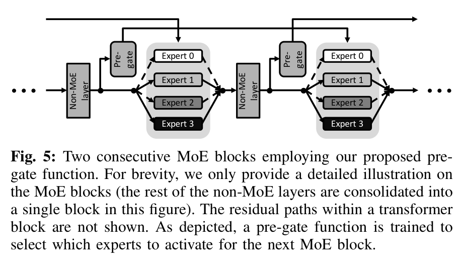
把下一层 gate 前移：训练得到较早的正式专家选择 Pre-gated MoE: An Algorithm-System Co-Design for Fast and Scalable Mixture-of-Expert Inference · Fig. 5 · version v3 · PDF p.5 / printed p.not printed / not legible
Read original size
Original caption & source Fig. 5: Two consecutive MoE blocks employing our proposed pre- gate function. For brevity, we only provide a detailed illustration on the MoE blocks (the rest of the non-MoE layers are consolidated into a single block in this figure). The residual paths within a transformer block are not shown. As depicted, a pre-gate function is trained to select which experts to activate for the next MoE block.
https://arxiv.org/pdf/2308.12066v3
Fig.5 的两块 MoE block 中，当前计算与“为下一块选择专家”发生在不同位置。看箭头时，要把专家输出流和未来 gate 输出流分开；非 MoE 部分被合并成一个块，残差路径未完整绘出。若前一块选择下一块专家 1、3，系统此时就能搬它们，但这组选择来自新 pre-gate，不能推断它一定等于原来晚执行的 gate。
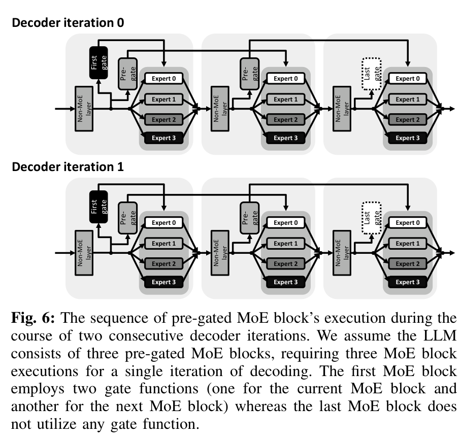
首层双 gate、末层无 next gate：预测仅跨本轮 decoder 的层 Pre-gated MoE: An Algorithm-System Co-Design for Fast and Scalable Mixture-of-Expert Inference · Fig. 6 · version v3 · PDF p.6 / printed p.not printed / not legible
Read original size
Original caption & source Fig. 6: The sequence of pre-gated MoE block’s execution during the course of two consecutive decoder iterations. We assume the LLM consists of three pre-gated MoE blocks, requiring three MoE block executions for a single iteration of decoding. The first MoE block employs two gate functions (one for the current MoE block and another for the next MoE block) whereas the last MoE block does not utilize any gate function.
https://arxiv.org/pdf/2308.12066v3
Fig.6 在两个 decoder iteration 中展示三层执行。第一块同时需要当前 gate 和下一块 pre-gate；最后一块不再预测下一块。这一结构说明论文缩短的是同一 token 内的跨层等待 ，并没有提前知道下一轮生成 token 的全部专家路线。图里 iteration 的分界正是理解时域的关键。
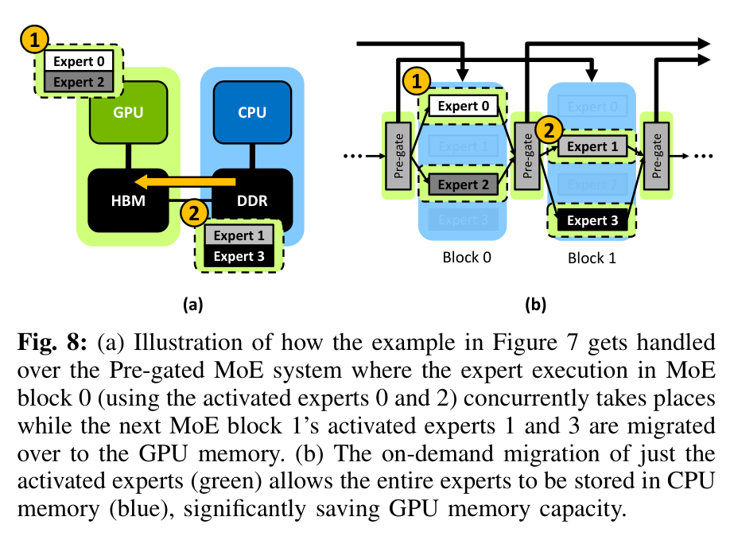
当前专家执行与下一块权重迁移并行 Pre-gated MoE: An Algorithm-System Co-Design for Fast and Scalable Mixture-of-Expert Inference · Fig. 8 · version v3 · PDF p.7 / printed p.not printed / not legible
Read original size
Original caption & source Fig. 8: (a) Illustration of how the example in Figure 7 gets handled over the Pre-gated MoE system where the expert execution in MoE block 0 (using the activated experts 0 and 2) concurrently takes places while the next MoE block 1’s activated experts 1 and 3 are migrated over to the GPU memory. (b) The on-demand migration of just the activated experts (green) allows the entire experts to be stored in CPU memory (blue), significantly saving GPU memory capacity.
https://arxiv.org/pdf/2308.12066v3
Fig.8 的蓝色 CPU 权重库与绿色 GPU 活跃专家区，说明显存节省来自按需驻留，不是删除未激活专家。上方时间线中执行 0、2 的同时搬 1、3；收益需要当前计算时间足够长、迁移通道不冲突且下一层需要的专家已知。若只看绿色区大小，会漏掉主存仍保存全部专家的成本。
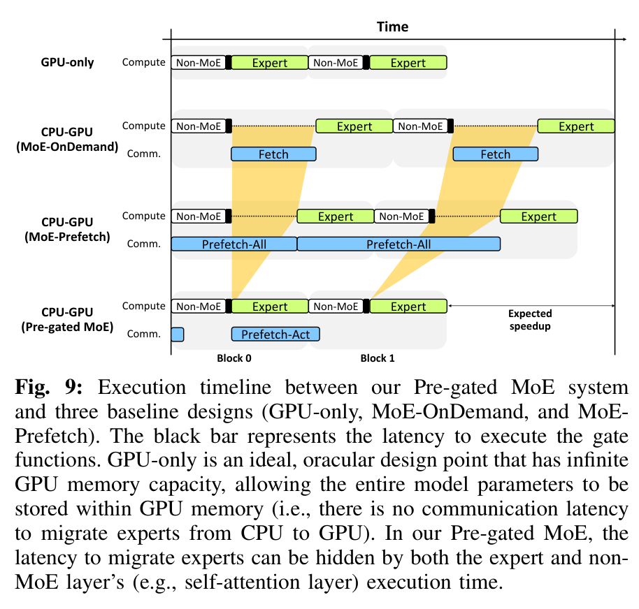
四条执行时间线：全层预取为什么浪费带宽 Pre-gated MoE: An Algorithm-System Co-Design for Fast and Scalable Mixture-of-Expert Inference · Fig. 9 · version v3 · PDF p.7 / printed p.not printed / not legible
Read original size
Original caption & source Fig. 9: Execution timeline between our Pre-gated MoE system and three baseline designs (GPU-only, MoE-OnDemand, and MoE- Prefetch). The black bar represents the latency to execute the gate functions. GPU-only is an ideal, oracular design point that has infinite GPU memory capacity, allowing the entire model parameters to be stored within GPU memory (i.e., there is no communication latency to migrate experts from CPU to GPU). In our Pre-gated MoE, the latency to migrate experts can be hidden by both the expert and non- MoE layer’s (e.g., self-attention layer) execution time.
https://arxiv.org/pdf/2308.12066v3
Fig.9 对比 GPU-only、按需、搬整层和 Pre-gated。黑条是 gate 时间，等待区和搬运区决定关键路径；GPU-only 是所有权重都装得下的理想点。搬整层虽然早开始，却传输大量不会使用的专家；Pre-gated 只搬选中集合，并利用专家与非 MoE 计算窗口。图展示的是结构性机会，不意味着任意模型、带宽和 batch 都能完全隐藏。
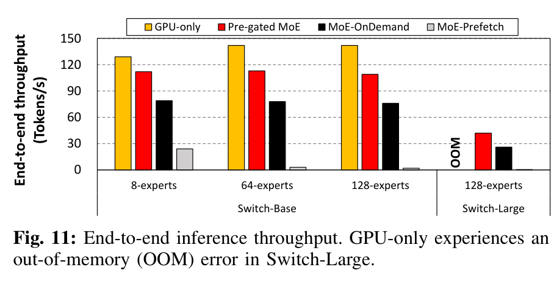
端到端吞吐：和按需、全层搬运及全驻留分别比较 Pre-gated MoE: An Algorithm-System Co-Design for Fast and Scalable Mixture-of-Expert Inference · Fig. 11 · version v3 · PDF p.9 / printed p.not printed / not legible
Read original size
Original caption & source Fig. 11: End-to-end inference throughput. GPU-only experiences an out-of-memory (OOM) error in Switch-Large.
https://arxiv.org/pdf/2308.12066v3
Fig.11 的纵轴为端到端 token 吞吐。作者使用 A100 80GB、AMD EPYC 7V12 64 核和 1.8TB 主存；Switch-Base 平均约 111 tok/s，约为全 GPU 的 81%，相对按需约 1.5×，相对搬整层约 27×。Switch-Large 的 GPU-only OOM 是容量事实。论文另一个 125× 数字针对特定 MoE block 与整层搬运基线，不能移作现代缓存系统的端到端收益。
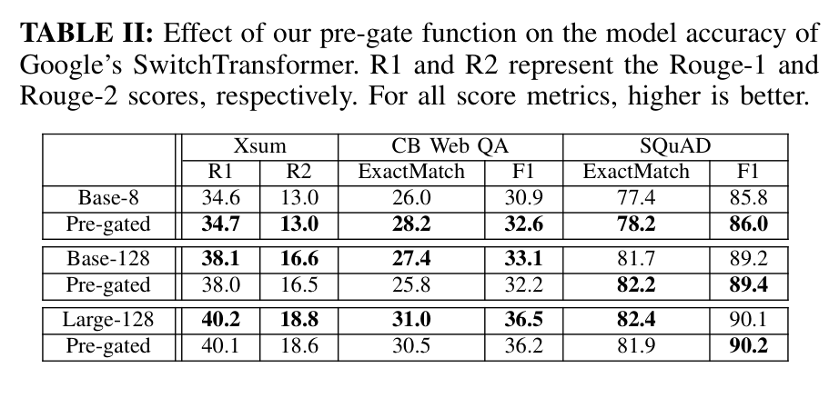
改 gate 后的任务质量：需要微调后的实测证据 Pre-gated MoE: An Algorithm-System Co-Design for Fast and Scalable Mixture-of-Expert Inference · Table II · version v3 · PDF p.10 / printed p.not printed / not legible
Read original size
Original caption & source TABLE II: Effect of our pre-gate function on the model accuracy of Google’s SwitchTransformer. R1 and R2 represent the Rouge-1 and Rouge-2 scores, respectively. For all score metrics, higher is better.
https://arxiv.org/pdf/2308.12066v3
Table II 比较 XSUM、CB、WebQA、SQuAD 等任务，ROUGE 与准确率有不同含义。作者微调预算为 2048 × 256 × 256 = 2 27 2048\times256\times256=2^{27} 10 − 4 10^{-4}
Mixtral-Offloading：下一层 gate 可以先猜，错了再加载
Fast Inference of Mixture-of-Experts Language Models with Offloading [P02] ，公开于 2023-12-28，给出更容易集成的办法：残差连接使相邻层隐藏状态相关，先将当前 gate 的输入送入下一层 gate，猜未来专家。正式下一层 gate 仍在真实输入上运行，漏报专家继续 demand-load，因此预取策略本身不改变路由。
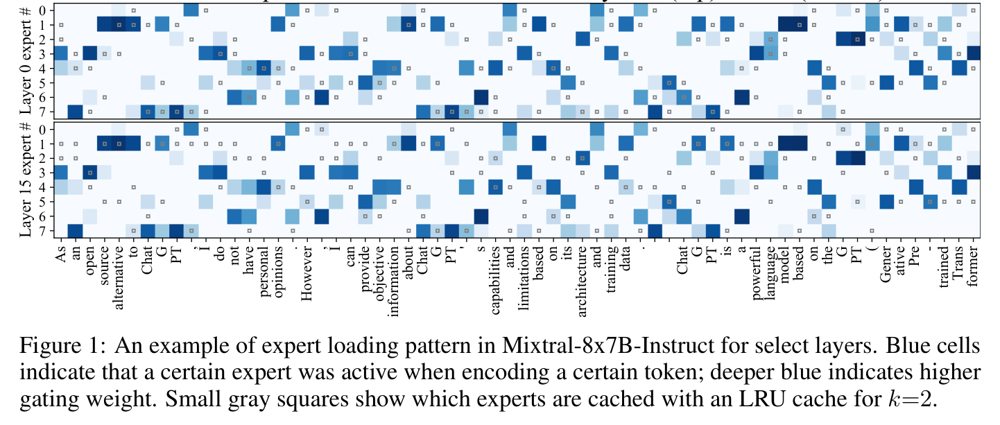
蓝色激活轨迹：相邻 token 的专家具有局部复用 Fast Inference of Mixture-of-Experts Language Models with Offloading · Figure 1 · version v1 · PDF p.4 / printed p.4
Read original size
Original caption & source Figure 1: An example of expert loading pattern in Mixtral-8x7B-Instruct for select layers. Blue cells indicate that a certain expert was active when encoding a certain token; deeper blue indicates higher gating weight. Small gray squares show which experts are cached with an LRU cache for k=2.
https://arxiv.org/pdf/2312.17238v1
Figure 1 横向是文本 token，纵向是专家；深浅蓝表示该 token 使用的专家权重。连续色带说明短期复用，但不同层呈现不同模式。这个图支持缓存和近邻预测的动机，不支持“一旦激活就长期不变”。遇到文本主题、格式或推理状态改变，轨迹可能迅速切换。
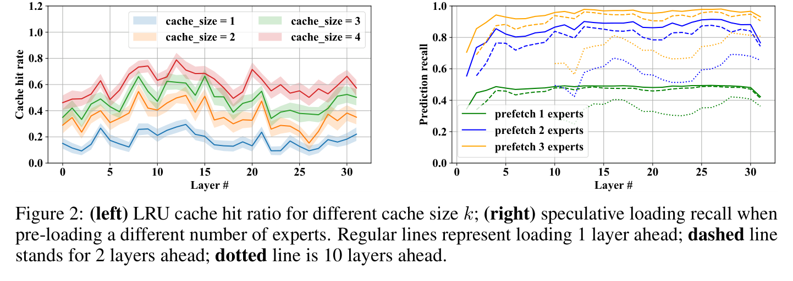
缓存命中与跨层预测 Recall 是两组曲线 Fast Inference of Mixture-of-Experts Language Models with Offloading · Figure 2 · version v1 · PDF p.6 / printed p.6
Read original size
Original caption & source Figure 2: (left) LRU cache hit ratio for different cache size k; (right) speculative loading recall when pre-loading a different number of experts. Regular lines represent loading 1 layer ahead; dashed line stands for 2 layers ahead; dotted line is 10 layers ahead.
https://arxiv.org/pdf/2312.17238v1
Figure 2 左边随每层缓存大小变化的 hit ratio，右边随预测个数和跨层距离变化的 Recall，分母不同。预测一层通常比十层更可靠，预测更多能提高覆盖却增加流量。作者采用逐层 LRU，加共享暂存槽；预测未确认前不立即替换正式缓存，避免一个错误猜测把马上会用的专家踢出。
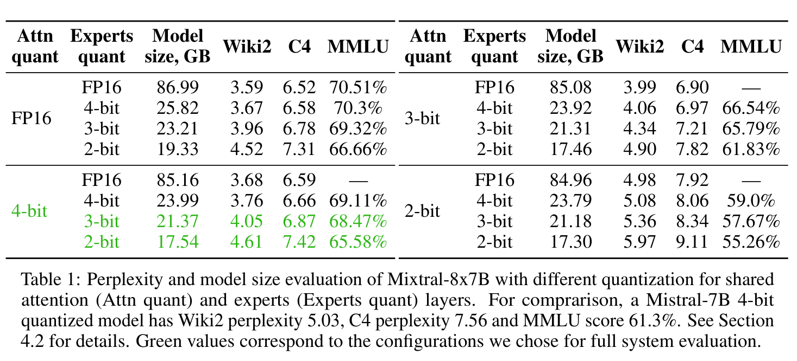
低位宽容量与困惑度：预取之外的另一个变量 Fast Inference of Mixture-of-Experts Language Models with Offloading · Table 1 · version v1 · PDF p.6 / printed p.6
Read original size
Original caption & source Table 1: Perplexity and model size evaluation of Mixtral-8x7B with different quantization for shared attention (Attn quant) and experts (Experts quant) layers. For comprarison, a Mistral-7B 4-bit quantized model has Wiki2 perplexity 5.03, C4 perplexity 7.56 and MMLU score 61.3%. See Section 4.2 for details. Green values correspond to the configurations we chose for full system evaluation.
https://arxiv.org/pdf/2312.17238v1
Table 1 的 attention 与 expert 位宽分别变化。HQQ 2-bit 专家的有效位宽含元数据约 2.6 bit；gate、embedding、norm 保持较高精度。C4、WikiText-2 的 PPL 和 5-shot MMLU 使用 base 模型，性能使用 Instruct。表说明量化扩大可运行范围，也意味着“相同路由”的系统不能把低位宽质量变化归给预测命中率。
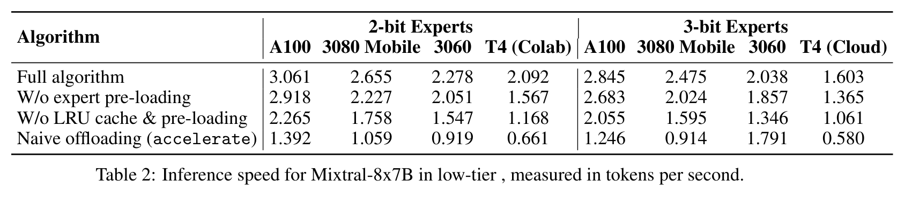
只关闭预加载的消融：小卡收益与其他优化分开 Fast Inference of Mixture-of-Experts Language Models with Offloading · Table 2 · version v1 · PDF p.7 / printed p.7
Read original size
Original caption & source Table 2: Inference speed for Mixtral-8x7B in low-tier , measured in tokens per second.
https://arxiv.org/pdf/2312.17238v1
Table 2 在 RTX 3060 的 2-bit 配置中，完整方案 2.278 tok/s，去掉预加载为 2.051；T4 Colab 为 2.092 与 1.567。两组各自在自己的硬件、位宽与实现条件内比较。OpenAssistant、batch 1、概率采样且未加 temperature/nucleus 是论文测试条件。12GB/16GB 配置分别给每层约 2/4 个缓存专家，再配四个共享暂存缓冲；这不是只靠某一个准确率数字获得加速。
冻结代码中，custom_layers.py 能明确追踪“真实 gate → top-k → 真实批次专家并集 → load_experts → 按真实权重累加”的链路，cache 使用 pinned storage 和非阻塞复制。本次静态核验的 wrapper 不包含论文全部下一层预测 hooks，因此可以验证 demand-load 语义，不能宣称完成论文预取性能复现。
4. 2024：请求历史缓存与 CPU 计算改变竞争基线
MoE-Infinity：预测一段请求的热点，而非只猜邻层
MoE-Infinity [P03] 于 2024-01-25 公开。本文使用 v3 的当前标题和机制：请求级 Expert Activation Matrix，简称 EAM，记录各层、各专家在一次请求中出现的频度。系统将当前请求的累积模式与历史请求做相似度匹配，估计未来层的专家需求，并同时指导缓存保留与预取。
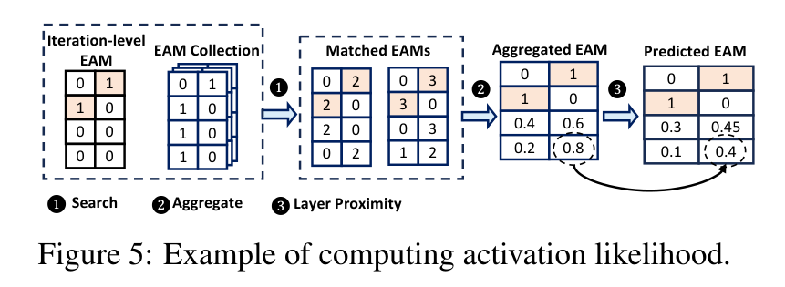
EAM 相似请求匹配：用分布估计未来层热点 MoE-Infinity: Efficient MoE Inference on Personal Machines with Sparsity-Aware Expert Cache · Figure 5 · version v3 · PDF p.5 / printed p.5
Read original size
Original caption & source Figure 5: Example of computing activation likelihood.
https://arxiv.org/pdf/2401.14361v3
Figure 5 先把当前请求的部分激活统计与历史 EAM 比较，再合成未来层 likelihood。矩阵每行是一层，每列是专家；迭代统计和请求累计统计应分开，prefill 与 decode 也分开。原文某处称行和为 token 数：对未归一化 top-k k k n kn k k
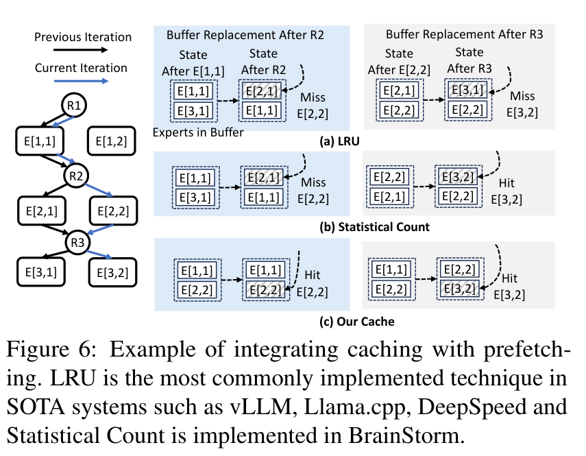
预取与淘汰共同使用 likelihood 和层距离 MoE-Infinity: Efficient MoE Inference on Personal Machines with Sparsity-Aware Expert Cache · Figure 6 · version v3 · PDF p.6 / printed p.6
Read original size
Original caption & source Figure 6: Example of integrating caching with prefetch- ing. LRU is the most commonly implemented technique in SOTA systems such as vLLM, Llama.cpp, DeepSpeed and Statistical Count is implemented in BrainStorm.
https://arxiv.org/pdf/2401.14361v3
Figure 6 给出缓存槽有限时的替换例子：既看未来使用可能性，也看何时使用。浅层即将使用的专家优先级可能高于遥远层热门专家；prefetch 和 eviction 不能各自独立贪心。正式使用发生 miss 时仍有 FetchOnDemand，这使错误历史匹配表现为等待与多余流量，而非直接替代目标路由。
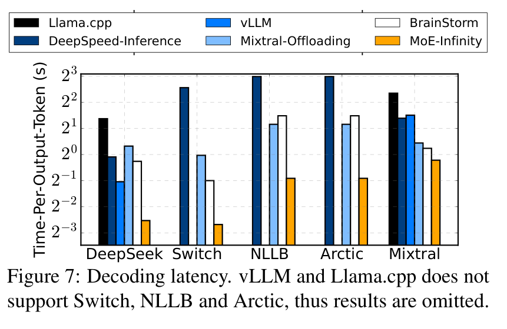
不同模型的 TPOT：使用当前 v3 的基线与范围 MoE-Infinity: Efficient MoE Inference on Personal Machines with Sparsity-Aware Expert Cache · Figure 7 · version v3 · PDF p.7 / printed p.7
Read original size
Original caption & source Figure 7: Decoding latency. vLLM and Llama.cpp does not support Switch, NLLB and Arctic, thus results are omitted.
https://arxiv.org/pdf/2401.14361v3
Figure 7 比較多种模型的 decoding latency；未支持 Switch、NLLB、Arctic 的引擎没有对应柱，缺项不能当作性能为零。作者在 A5000、PCIe4×16 上测试，典型 prompt 512、输出 32；不同模型主存需求从几十 GB 到 Arctic 约 1TB。v3 总结相对指定基线约 2.7–13.7×，不能套用旧版本标题下的 3.1–16.7×。
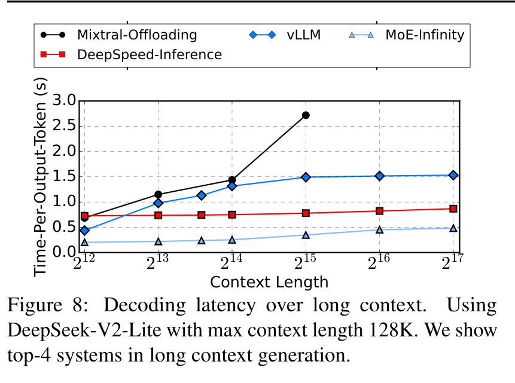
长上下文结果：历史缓存与 KV 占用必须同时看 MoE-Infinity: Efficient MoE Inference on Personal Machines with Sparsity-Aware Expert Cache · Figure 8 · version v3 · PDF p.8 / printed p.8
Read original size
Original caption & source Figure 8: Decoding latency over long context. Using DeepSeek-V2-Lite with max context length 128K. We show top-4 systems in long context generation.
https://arxiv.org/pdf/2401.14361v3
Figure 8 用 DeepSeek-V2-Lite 扩到 128K context，并展示选出的四个系统。横轴上下文增长同时影响 attention/KV 与可留给专家的空间；它不是单纯扩大预取窗口。某条 TPOT 曲线增长较慢，可能同时来自缓存分配和框架实现，不能仅归因于 EAM 预测。
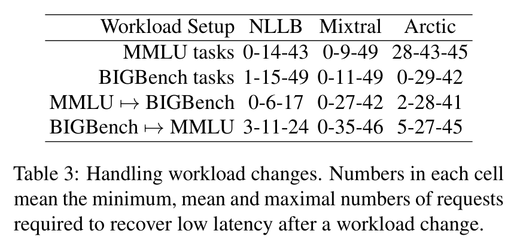
工作负载切换后的恢复：历史匹配需要重新适应 MoE-Infinity: Efficient MoE Inference on Personal Machines with Sparsity-Aware Expert Cache · Table 3 · version v3 · PDF p.8 / printed p.8
Read original size
Original caption & source Table 3: Handling workload changes. Numbers in each cell mean the minimum, mean and maximal numbers of requests required to recover low latency after a workload change.
https://arxiv.org/pdf/2401.14361v3
Table 3 每格给出切换后恢复低延迟所需请求数的最小、平均和最大值。它回答“历史经验遇到新分布会多久重新有效”，而非恢复模型能力。v3 还分析组间转移多数概率很低，提醒读者逐步 Markov 外推并非总可靠。后来的 SeqMoE 使用完整序列模型；两者证据的模型、粒度与数据不同，不能据此宣布其中一个推翻另一种相关性。
Fiddler：权重很大、token 很少时，把真实专家放到 CPU 算
Fiddler [P04] 公开于 2024-02-10，本文核验 ICLR 2025 的 v3。它不依赖提前预测专家身份，而是在正式路由后比较“搬权重到 GPU”与“把小激活送到 CPU，在权重旁计算”。这建立了重要竞争基线：预测错过窗口时，等待完整专家拷贝并非唯一正确回退。
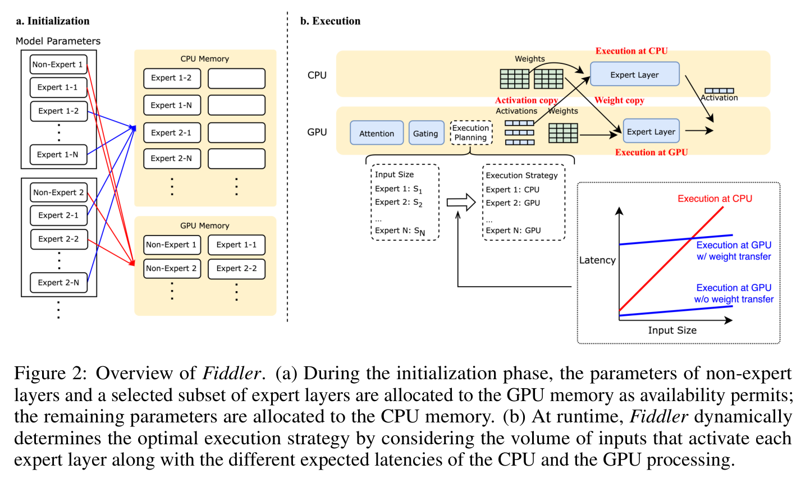
非专家常驻 GPU，真实专家在两种设备间分工 Fiddler: CPU-GPU Orchestration for Fast Inference of Mixture-of-Experts Models · Figure 2 · version v3 · PDF p.4 / printed p.4
Read original size
Original caption & source Figure 2: Overview of Fiddler. (a) During the initialization phase, the parameters of non-expert layers and a selected subset of expert layers are allocated to the GPU memory as availability permits; the remaining parameters are allocated to the CPU memory. (b) At runtime, Fiddler dynamically determines the optimal execution strategy by considering the volume of inputs that activate each expert layer along with the different expected latencies of the CPU and the GPU processing.
https://arxiv.org/pdf/2402.07033v3
Figure 2 初始化把非专家参数和一部分高频专家放到 GPU，其余留在 CPU。运行时针对真正被选择的专家派发；图中的大权重流与小激活流方向相反。CPU 路径保留当前真实输入、真实权重与组合系数，因此属于目标路由不变，数值一致性仍要考虑不同 kernel。
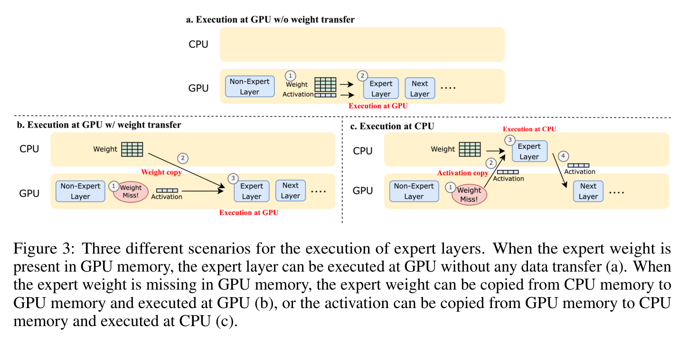
三条路径：常驻、搬权重、搬激活 Fiddler: CPU-GPU Orchestration for Fast Inference of Mixture-of-Experts Models · Figure 3 · version v3 · PDF p.5 / printed p.5
Read original size
Original caption & source Figure 3: Three different scenarios for the execution of expert layers. When the expert weight is present in GPU memory, the expert layer can be executed at GPU without any data transfer (a). When the expert weight is missing in GPU memory, the expert weight can be copied from CPU memory to GPU memory and executed at GPU (b), or the activation can be copied from GPU memory to CPU memory and executed at CPU (c).
https://arxiv.org/pdf/2402.07033v3
Figure 3 上路无需迁移，中路 H2D 搬专家权重再执行，下路 D2H 搬激活、CPU 算、H2D 返回结果。一个 decode token 的激活远小于一整块权重；prefill 数百 token 时 CPU GEMM 成本会增长，GPU 批处理优势变大。所以 CPU/GPU 的选择必须随专家收到的 token 数改变，不能设定“CPU 总是慢”或“offload 总要搬权重”。
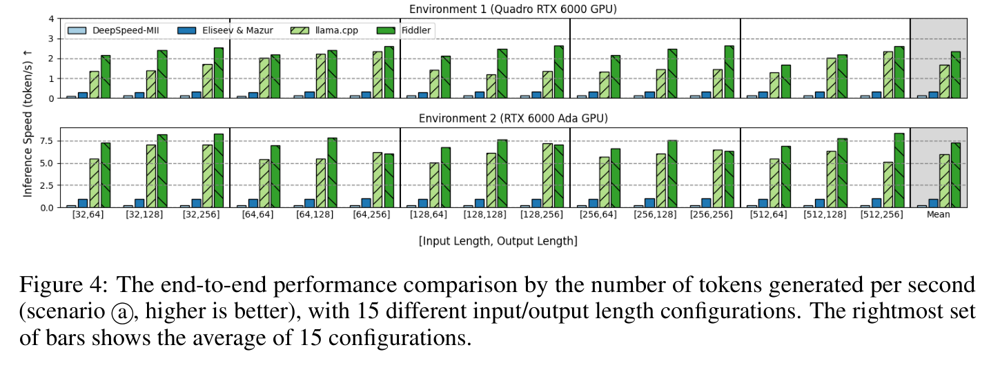
端到端吞吐的分母包括 prefill 与 decode Fiddler: CPU-GPU Orchestration for Fast Inference of Mixture-of-Experts Models · Figure 4 · version v3 · PDF p.9 / printed p.9
Read original size
Original caption & source Figure 4: The end-to-end performance comparison by the number of tokens generated per second (scenario a , higher is better), with 15 different input/output length configurations. The rightmost set of bars shows the average of 15 configurations.
https://arxiv.org/pdf/2402.07033v3
Figure 4 测 15 组输入 32–256、输出 64–512 的 batch-1 组合，纵轴是生成 token 数除以整个推理时间。RTX6000 24GB 与 RTX6000 Ada 49GB 对应两套不同 CPU、PCIe 和驻留比例，分别有 56/256 与 125/256 专家常驻。作者平均相对 llama.cpp 约 1.26×；这个平均不是纯 TPOT，也不是统一精度下所有预取器的排名。
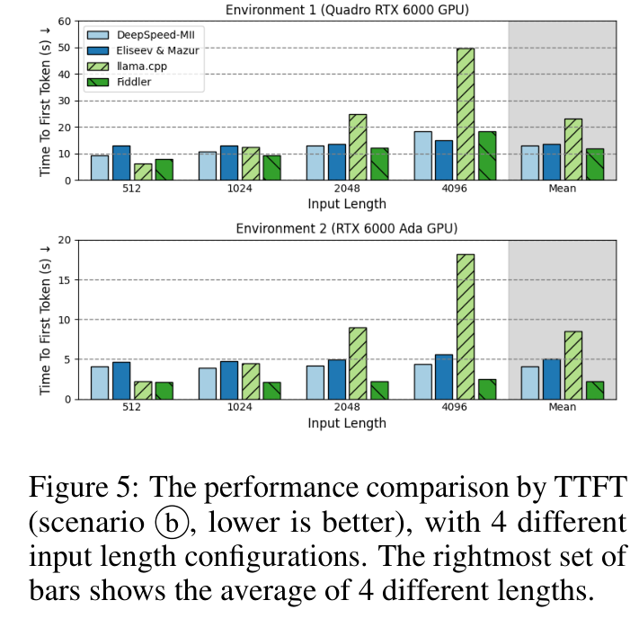
长 prompt 的 TTFT：CPU 回退也需要负载模型 Fiddler: CPU-GPU Orchestration for Fast Inference of Mixture-of-Experts Models · Figure 5 · version v3 · PDF p.9 / printed p.9
Read original size
Original caption & source Figure 5: The performance comparison by TTFT (scenario b , lower is better), with 4 different input length configurations. The rightmost set of bars shows the average of 4 different lengths.
https://arxiv.org/pdf/2402.07033v3
Figure 5 用输入 512–4096 对比 TTFT。长 prefill 下作者报告约 1.07× MII、1.65×其修改的 Mixtral-Offloading，后者改为 FP16，不能直接接到原 2-bit 表。冻结代码有按真实专家 token 数构造 CPU/GPU 成本的链路，但当前 prefill 分配循环最小化的实际是成本和，旁边注释却写 CPU/GPU 两路最大值；静态代码不足以证明与论文重叠策略完全一致。
Fiddler 的启示是把回退成本纳入预测目标。漏掉一个小专家与漏掉一个巨大的专家，或漏掉只处理一 token 与处理一千 token 的专家，等待代价不同。后面的 LayerScope、FreeToken、SPICE 正沿着这个方向扩展。
5. 预测和选择走到一起：AdapMoE、HOBBIT 与 DAOP
AdapMoE：少算一个专家，需要敏感度而非只看分数
AdapMoE [P05] 公开于 2024-08-19，正式发表于 ICCAD 2024。系统包含 adaptive gating、跨层预取与缓存分配。它尝试在部分 top-2 位置只执行 top-1，以减少计算和迁移；被省略的专家不是稍后回退补齐。因此完整 AdapMoE 属于近似执行，关闭 adaptive gating 后才能单独讨论预取的目标路由保持。
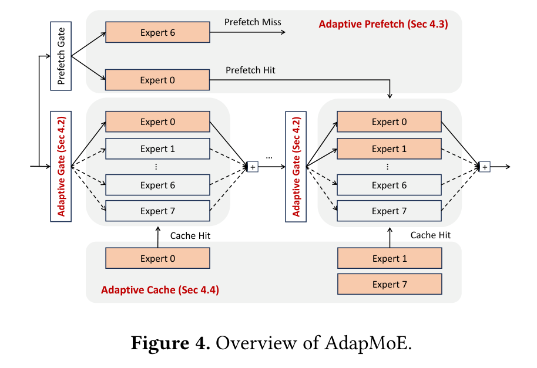
敏感度选择、预取和缓存分配组成完整系统 AdapMoE: Adaptive Sensitivity-based Expert Gating and Management for Efficient MoE Inference · Figure 4 · version v1 · PDF p.3 / printed p.not printed / not legible
Read original size
Original caption & source Figure 4. Overview of AdapMoE.
https://arxiv.org/pdf/2408.10284v1
Figure 4 的架构把输入、gate、敏感度判断、预取与专家 cache 连在一起。选择模块改变实际激活数，缓存模块决定哪些层保留多少专家。假设第二专家只占较小 gate mass，仍不能直接断定删除它影响小：专家输出方向、幅度和任务敏感性都参与误差。论文使用 Fisher 相关近似，意在超越简单 gate 分数阈值。
其扰动估计可概括为：
Δ ℒ ≈ ( 1 − α ) 2 C F i s h e r . \Delta \mathcal{L}\approx (1-\alpha)^2\,C_{\mathrm{Fisher}}. LaTeX source \Delta \mathcal{L}\approx (1-\alpha)^2\,C_{\mathrm{Fisher}}. α \alpha C F i s h e r C_{\mathrm{Fisher}}
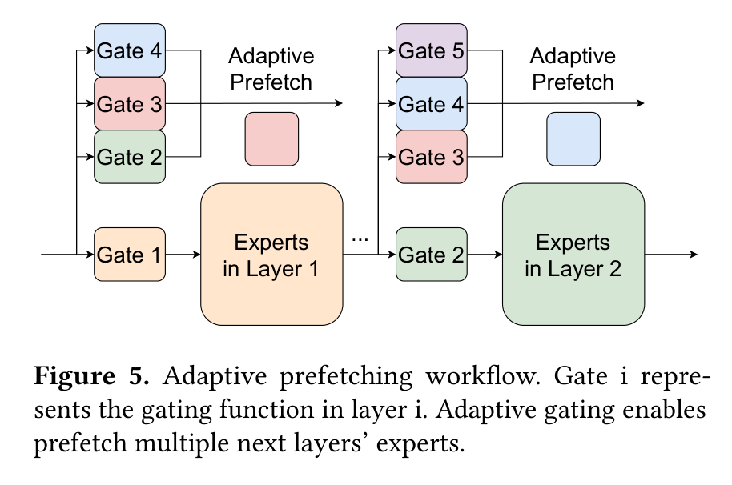
跨层预取与缓存检查：已命中下一层才继续看更远 AdapMoE: Adaptive Sensitivity-based Expert Gating and Management for Efficient MoE Inference · Figure 5 · version v1 · PDF p.4 / printed p.not printed / not legible
Read original size
Original caption & source Figure 5. Adaptive prefetching workflow. Gate i repre- sents the gating function in layer i. Adaptive gating enables prefetch multiple next layers’ experts.
https://arxiv.org/pdf/2408.10284v1
Figure 5 将现有 gate 作用于较早隐藏状态，并在近层专家已缓存时探索第二或第三层。不是无条件把多个未来层全部搬来。首层另用上一 token 的末层信息训练预测器，解决前面没有层可借的 bootstrap 问题。时域增加与准确性下降应同时评估，不能只把“预测三层”当成三倍收益。
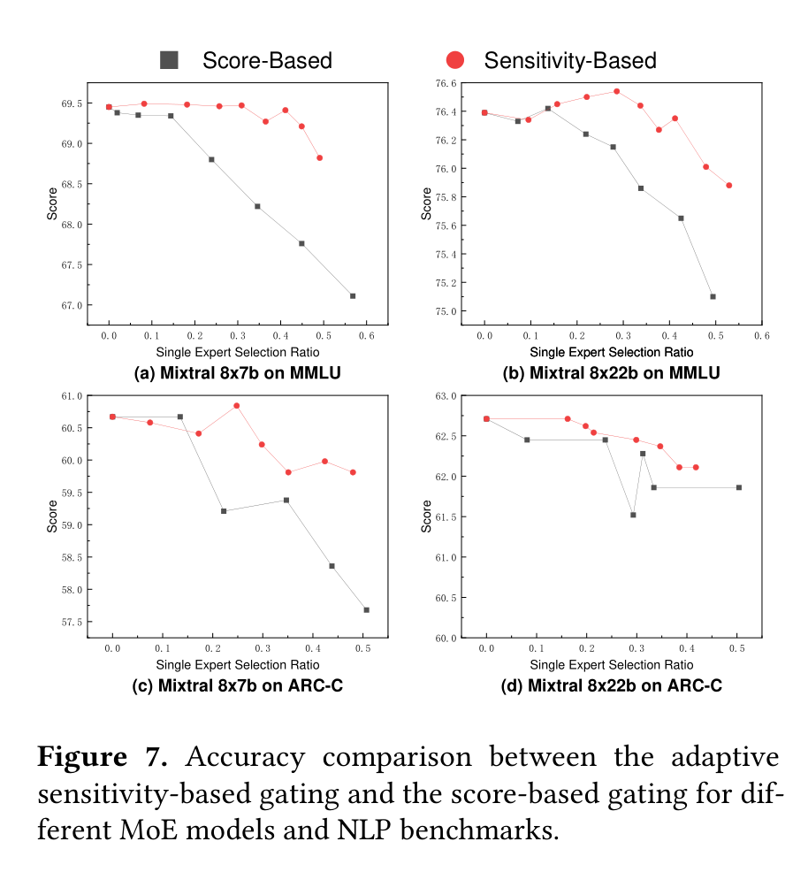
与分数删专家对比：质量曲线限定近似策略 AdapMoE: Adaptive Sensitivity-based Expert Gating and Management for Efficient MoE Inference · Figure 7 · version v1 · PDF p.7 / printed p.not printed / not legible
Read original size
Original caption & source Figure 7. Accuracy comparison between the adaptive sensitivity-based gating and the score-based gating for dif- ferent MoE models and NLP benchmarks.
https://arxiv.org/pdf/2408.10284v1
Figure 7 在不同模型和 NLP 任务比较敏感度 gating 与分数 gating。横向变化的是近似程度，纵向是对应任务分数，不是预取命中率。相同省算比例下质量较好支持敏感度设计，但不意味着删除专家无损，也不能将不同任务均值替代推理失败样本分析。
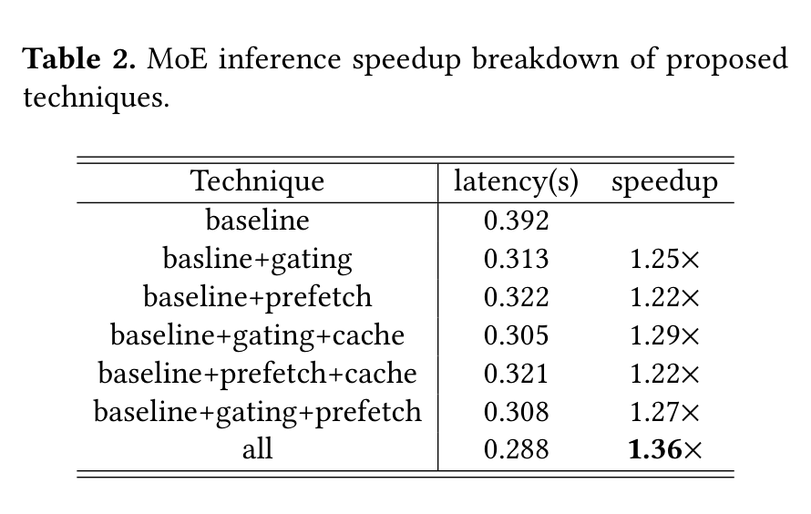
逐项消融：1.36× 是完整组合收益 AdapMoE: Adaptive Sensitivity-based Expert Gating and Management for Efficient MoE Inference · Table 2 · version v1 · PDF p.8 / printed p.not printed / not legible
Read original size
Original caption & source Table 2. MoE inference speedup breakdown of proposed techniques.
https://arxiv.org/pdf/2408.10284v1
Table 2 的 Mixtral-8x7B、4-bit、RTX4090、128 cache 配置中，baseline 为 0.392s；gating 为 0.313，prefetch 为 0.322，gating+cache 为 0.305，prefetch+cache 为 0.321，gating+prefetch 为 0.308，完整方案为 0.288。0.392/0.288 约 1.36×。这些数字清楚说明收益不能全部算给预测器；作者 baseline 是已修改并提速的 Mixtral-Offloading，也不能直接与原论文吞吐拼接。
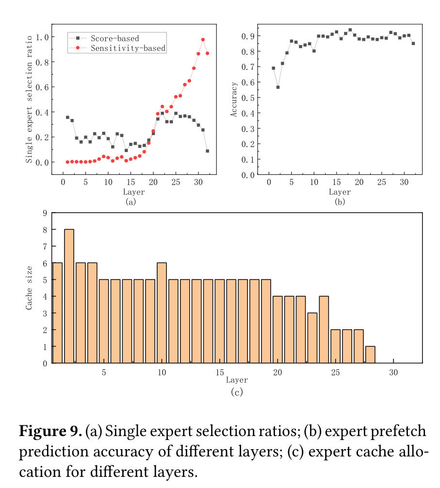
层间异质性：单专家比例、预测率和缓存份额不同 AdapMoE: Adaptive Sensitivity-based Expert Gating and Management for Efficient MoE Inference · Figure 9 · version v1 · PDF p.8 / printed p.not printed / not legible
Read original size
Original caption & source Figure 9. (a) Single expert selection ratios; (b) expert prefetch prediction accuracy of different layers; (c) expert cache allo- cation for different layers.
https://arxiv.org/pdf/2408.10284v1
Figure 9 的三个子图分别显示只选一个专家的比例、各层预测指标与每层 cache 分配。单专家比例约 24% 是实验中实际采用的近似程度；每层命中和敏感度并不相同，所以平均分配未必合适。图把“省略需求”与“提前覆盖需求”画在不同面板，读者也应分开两者的速度来源。
HOBBIT：按贡献分级精度，预测只是其中一环
HOBBIT [P09] 于 2024-11-03 公开，本文核验 v2。它把高贡献专家以较高精度执行，低贡献专家用低精度，极低贡献专家可以跳过；随后结合多层 gate 预测和 cache。其完整路线含近似计算，不宜从“仍使用真实 gate”推导全部专家输出保持。
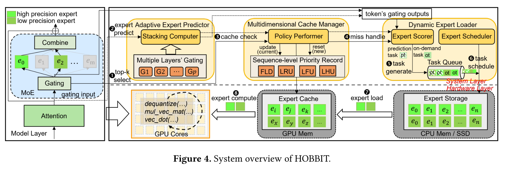
三层管理：token 精度选择、层预测和模型缓存 HOBBIT: A Mixed Precision Expert Offloading System for Fast MoE Inference · Figure 4 · version v2 · PDF p.4 / printed p.not printed / not legible
Read original size
Original caption & source Figure 4. System overview of HOBBIT.
https://arxiv.org/pdf/2411.01433v2
Figure 4 从 token、layer、model 三个层次组织 loader、predictor、cache。高低精度副本同时存在意味着主存或 SSD 容量不能只按一个位宽计算。GPU miss 时的精度替代会影响质量；即使预测全部正确，也未必与原 FP16 专家完全相同。
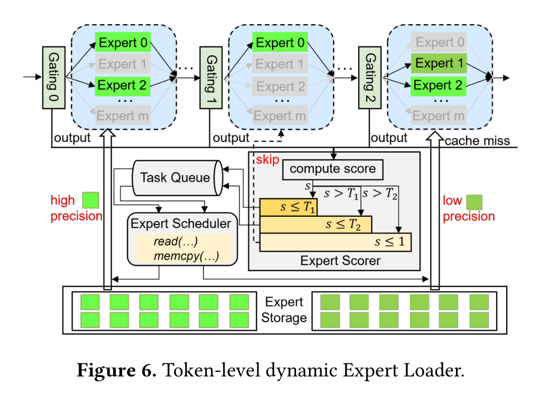
按 gate mass 分级：贡献相关性不是误差上界 HOBBIT: A Mixed Precision Expert Offloading System for Fast MoE Inference · Figure 6 · version v2 · PDF p.5 / printed p.not printed / not legible
Read original size
Original caption & source Figure 6. Token-level dynamic Expert Loader.
https://arxiv.org/pdf/2411.01433v2
Figure 6 把选中专家按 gate 权重排序，以累积 mass 定义“不重要”程度。Mixtral 的阈值约 0.6/0.9，报告约 67% 高精度、30% 低精度、3% 跳过；top-1 始终高精度。小系数乘大输出仍可能很重要，因此 gate mass 是实证代理变量，而非严格的输出范数或任务损失保证。
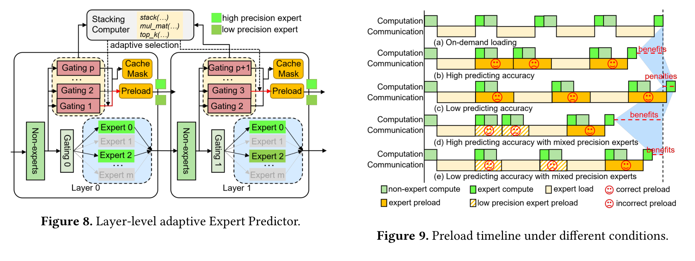
未来 gate 堆叠与不可中断的拷贝：预测过深会阻塞 HOBBIT: A Mixed Precision Expert Offloading System for Fast MoE Inference · Figures 8–9 · version v2 · PDF p.6 / printed p.not printed / not legible
Read original size
Original caption & source Figure 8. Layer-level adaptive Expert Predictor.
Figure 9. Preload timeline under different conditions.
https://arxiv.org/pdf/2411.01433v2
Figures 8–9 展示把未来 1–3 个 gate 合并预测，减少逐 gate 启动开销，同时画出预加载时序。图中的拷贝块不能随时取消：如果错误预测已经进入整块 DMA，真正需求只能等它结束。缓存保护预测专家能减少被提前淘汰，但也可能阻止更有价值的替换，需结合窗口和字节成本。
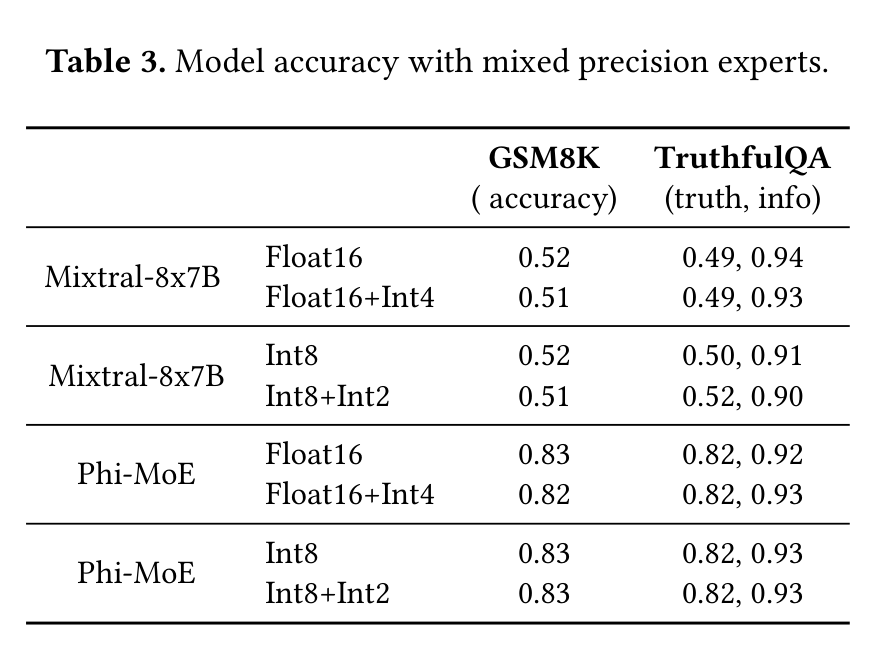
混合精度的质量：看具体任务和原始协议 HOBBIT: A Mixed Precision Expert Offloading System for Fast MoE Inference · Table 3 · version v2 · PDF p.10 / printed p.not printed / not legible
Read original size
Original caption & source Table 3. Model accuracy with mixed precision experts.
https://arxiv.org/pdf/2411.01433v2
Table 3 报告 FP16+INT4 等配置的任务结果。例如 Mixtral 的 GSM 指标约 0.52→0.51，Phi 约 0.83→0.82，但完整 few-shot、采样与抽取协议披露不充分，不能直接合并其他论文的 GSM8K 值。RTX4090 使用高精度底座与 INT4 替代，Orin 是 INT8 与 INT2，两个平台的质量和速度变化来源不同。
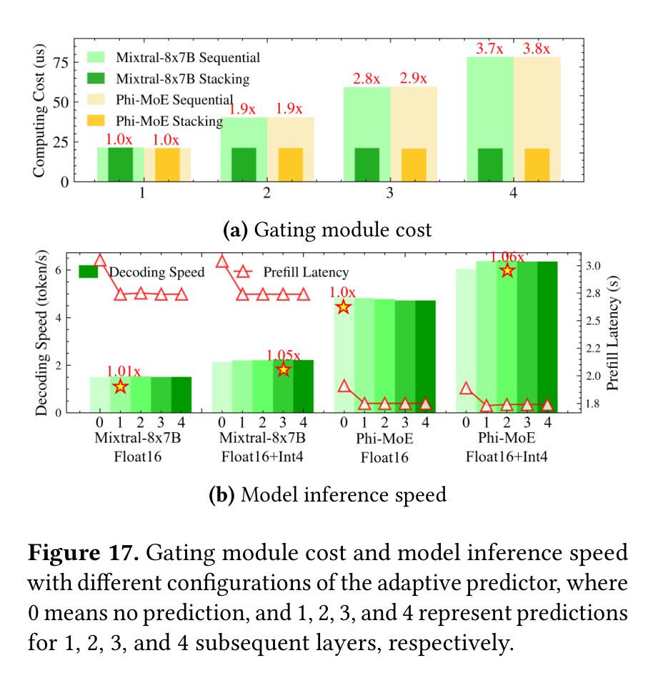
预取单独消融接近无收益：完整加速不能归给预测 HOBBIT: A Mixed Precision Expert Offloading System for Fast MoE Inference · Figure 17 · version v2 · PDF p.12 / printed p.not printed / not legible
Read original size
Original caption & source Figure 17. Gating module cost and model inference speed with different configurations of the adaptive predictor, where 0 means no prediction, and 1, 2, 3, and 4 represent predictions for 1, 2, 3, and 4 subsequent layers, respectively.
https://arxiv.org/pdf/2411.01433v2
Figure 17 左边是 gate 成本，右边比较不同预测深度和精度方案的推理速度。FP16 Mixtral 的预取单独收益约 1.01×，Phi 还略差；与混合精度结合后约 1.05×。作者在 RTX4090、256GB host 和 Jetson AGX Orin 32GB 上测 batch 1、60 条 Alpaca 样本；某些 13×/18.9× 大收益相对 llama.cpp 分页和低精度条件，不能当作预测器消融。这个负结果提醒：已有计算窗口短、权重大时，准确猜测也可能几乎无效。
DAOP：提前算 CPU 专家，实际使用的输入已经改变
DAOP [P10] 的 arXiv submission history 给出首次公开 2024-12-16 ，虽编号以 2501 开头；本文核验 v3。它先用请求 prefill 的频度调整 GPU/CPU 专家分布，decode 不再频繁迁移权重，并提前在 CPU 计算未来专家。减少搬运确实能加速，但预计算发生在未来真实 hidden state 尚未形成时，属于近似执行。
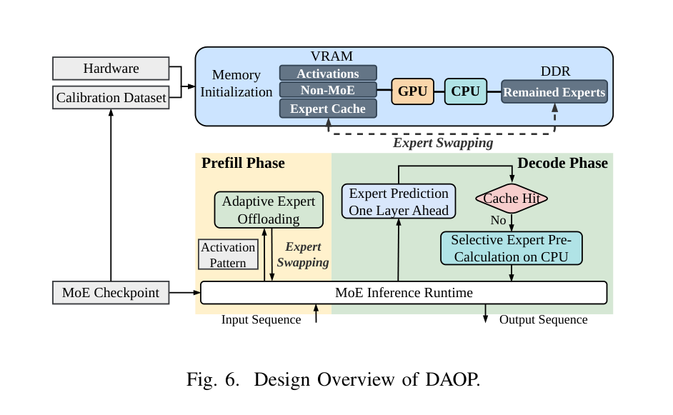
请求感知换位与 decode 预测预计算 DAOP: Data-Aware Offloading and Predictive Pre-Calculation for Efficient MoE Inference · Figure 6 · version v3 · PDF p.4 / printed p.not printed / not legible
Read original size
Original caption & source Fig. 6. Design Overview of DAOP.
https://arxiv.org/pdf/2501.10375v3
Figure 6 的前半部分根据 prefill 频率把 CPU 热专家与 GPU 冷专家交换，阈值约 1.05；后半部分在 decode 用较早隐藏状态预测下一层并启动 CPU 任务。论文前四层用于 bootstrap，随后使用预测。当前冻结源码的门槛条件与注释存在四/五层差异，应按版本分别理解，不能假设代码与论文完全同步。
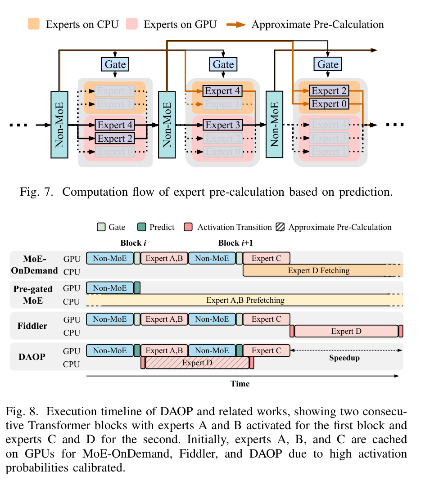
预计算和 Fiddler 的真实输入计算有根本区别 DAOP: Data-Aware Offloading and Predictive Pre-Calculation for Efficient MoE Inference · Figures 7–8 · version v3 · PDF p.4 / printed p.not printed / not legible
Read original size
Original caption & source Fig. 7. Computation flow of expert pre-calculation based on prediction.
Fig. 8. Execution timeline of DAOP and related works, showing two consecu- tive Transformer blocks with experts A and B activated for the first block and experts C and D for the second. Initially, experts A, B, and C are cached on GPUs for MoE-OnDemand, Fiddler, and DAOP due to high activation probabilities calibrated.
https://arxiv.org/pdf/2501.10375v3
Figures 7–8 同时画数据流与时间线。CPU 分支拿到的是更早输入；若两个预测专家都在 CPU，还会把低分那个换成 GPU 候选。于是误差来自输入和专家集合两处。Fiddler 虽晚一些启动 CPU，却用正式当前输入和真实选中专家。这张图不能只读成两条等价计算的不同调度顺序，“graceful degradation”也不是 exact fallback。
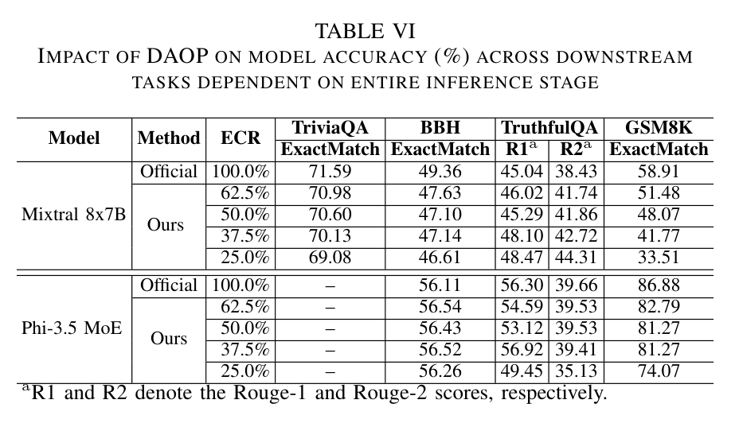
完整生成的 GSM8K 退化：首次 token 指标无法替代 DAOP: Data-Aware Offloading and Predictive Pre-Calculation for Efficient MoE Inference · Table VI · version v3 · PDF p.6 / printed p.not printed / not legible
Read original size
Original caption & source TABLE VI IMPACT OF DAOP ON MODEL ACCURACY (%) ACROSS DOWNSTREAM
https://arxiv.org/pdf/2501.10375v3
Table VI 的完整生成质量最能限定论断。Mixtral 的 GSM8K 在基线 58.91，ECR 62.5/50/37.5/25% 时依次为 51.48/48.07/41.77/33.51；最低比例下降 25.40 个百分点 。Phi 从 86.88 到 74.07 也明显下降。论文另一些 prefill/first-token 分数接近基线，不能衡量后续 decode 的近似累计。5-shot GSM8K、最终答案抽取等条件必须保留。
作者在 RTX A6000 48GB、i9-10980XE 18 核、约 130GB host、batch 1 下报告相对 Fiddler 约 35.4% 的速度提升，特定 naive fetch 基线最高约 8.2×。这些性能有意义，但需要与 ECR 和质量一起看。冻结 modeling_daop.py 直接使用存储的预测 GPU IDs/logits，并提交较早 hidden state 给 CPU，独立支持其属于近似链路的判断。
6. 请求路线预测、token 重组与独立 router
ExpertFlow：预测的是批次要用哪些专家，token 调度放大复用
ExpertFlow [P06] 首次公开于 2024-10-23，核验 arXiv 2410.17954v2，PDF 标示 DAC 2026。另一篇编号 2510.26730 的同名工作不是其新版，本篇不把两者混合引用。这里的关键是 Routing Path Predictor、Token Scheduler 和 Expert Cache Engine 三者联合，而非单独某层的 top-k k
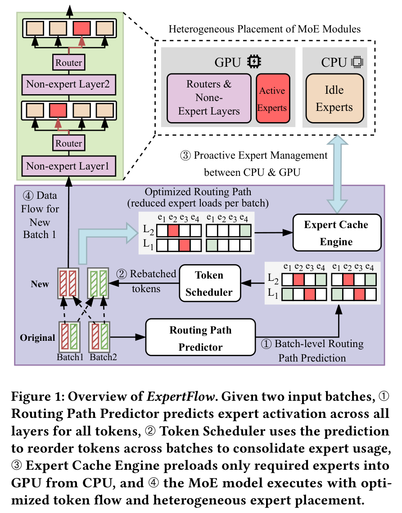
双批次系统：预测、重组、缓存与执行形成流水线 ExpertFlow: Efficient Mixture-of-Experts Inference via Predictive Expert Caching and Token Scheduling · Figure 1 · version v2 · PDF p.2 / printed p.not printed / not legible
Read original size
Original caption & source Figure 1: Overview of ExpertFlow. Given two input batches, ➀ Routing Path Predictor predicts expert activation across all layers for all tokens, ➁Token Scheduler uses the prediction to reorder tokens across batches to consolidate expert usage, ➂Expert Cache Engine preloads only required experts into GPU from CPU, and ➃the MoE model executes with opti- mized token flow and heterogeneous expert placement.
https://arxiv.org/pdf/2410.17954v2
Figure 1 用两个 batch 交替，让 CPU 预测和调度与 GPU 执行重叠。预测器产生多个层的专家需求，scheduler 把路线相似 token 聚合，cache engine 提前搬。若只看一个预测调用的耗时，容易忽略 token 重新编排和双批缓冲占用；真正收益是整条流水线更少搬重复权重。
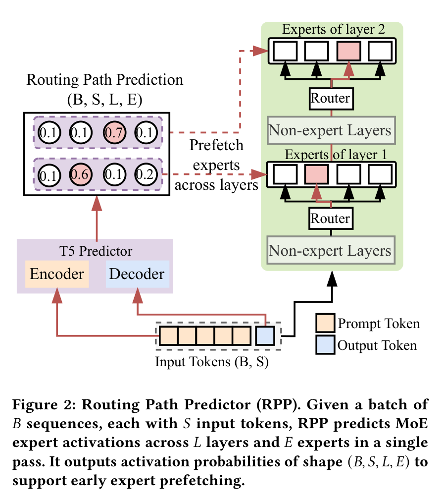
T5 式 encoder-decoder 输出 B×S×L×E 路线分数 ExpertFlow: Efficient Mixture-of-Experts Inference via Predictive Expert Caching and Token Scheduling · Figure 2 · version v2 · PDF p.3 / printed p.not printed / not legible
Read original size
Original caption & source Figure 2: Routing Path Predictor (RPP). Given a batch of 𝐵sequences, each with 𝑆input tokens, RPP predicts MoE expert activations across 𝐿layers and 𝐸experts in a single pass. It outputs activation probabilities of shape (𝐵,𝑆, 𝐿, 𝐸) to support early expert prefetching.
https://arxiv.org/pdf/2410.17954v2
Figure 2 把 batch 大小 B B S S L L E E
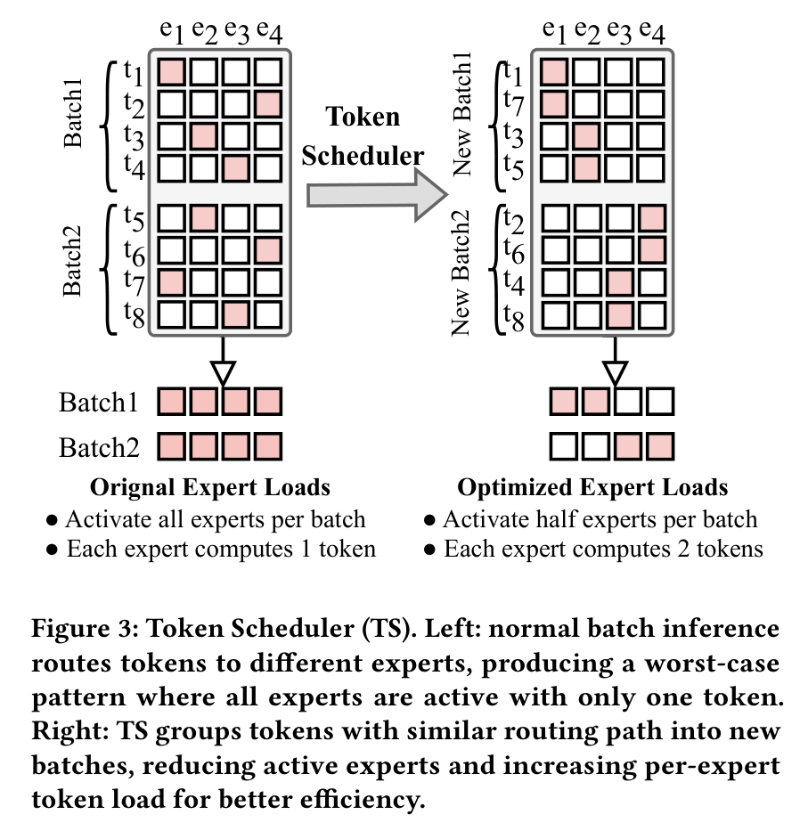
路线聚类重组 token：同一专家收到更多 token ExpertFlow: Efficient Mixture-of-Experts Inference via Predictive Expert Caching and Token Scheduling · Figure 3 · version v2 · PDF p.3 / printed p.not printed / not legible
Read original size
Original caption & source Figure 3: Token Scheduler (TS). Left: normal batch inference routes tokens to different experts, producing a worst-case pattern where all experts are active with only one token. Right: TS groups tokens with similar routing path into new batches, reducing active experts and increasing per-expert token load for better efficiency.
https://arxiv.org/pdf/2410.17954v2
Figure 3 左边极端情况每个专家只收到很少 token，右边把路径接近的 token 放到相同批次，降低同时活跃专家数。作者将 2 T 2T
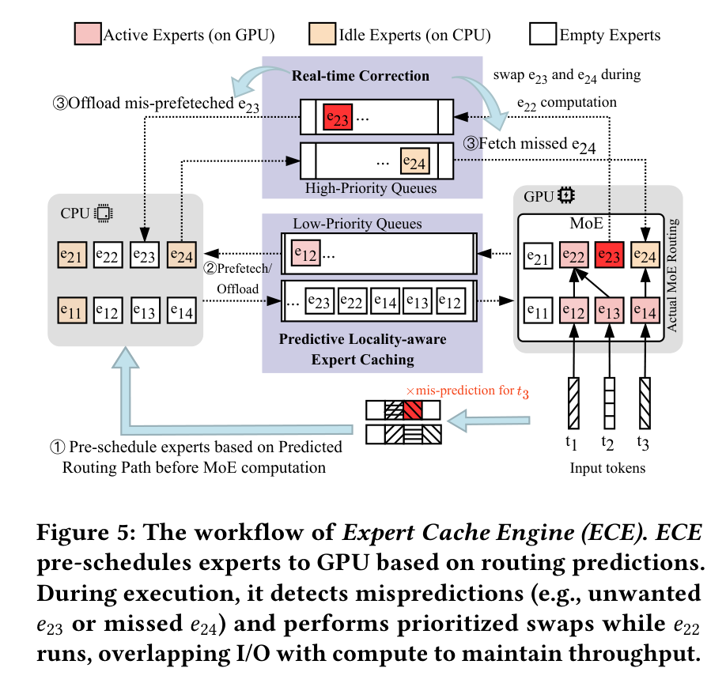
ECE 在真实 gate 后补齐漏报：预测集合不是正式路由 ExpertFlow: Efficient Mixture-of-Experts Inference via Predictive Expert Caching and Token Scheduling · Figure 5 · version v2 · PDF p.4 / printed p.not printed / not legible
Read original size
Original caption & source Figure 5: The workflow of Expert Cache Engine (ECE). ECE pre-schedules experts to GPU based on routing predictions. During execution, it detects mispredictions (e.g., unwanted 𝑒23 or missed 𝑒24) and performs prioritized swaps while 𝑒22 runs, overlapping I/O with compute to maintain throughput.
https://arxiv.org/pdf/2410.17954v2
Figure 5 的例子同时含不需要的预取专家和漏掉的真正专家，ECE 在正式 gate 后检测并补齐。批次重组后仍执行真实路由。因此模型语义保持依赖映射正确与 demand fallback 完整，预测错误则影响流量和等待。CPU token scheduler 报告小于 10ms，在很慢的 offload 中可能藏住，但对于快速 decode 仍不是可以忽略的开销。
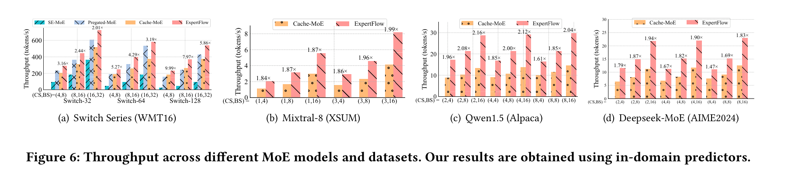
吞吐主结果：9.99× 出现在特定 Switch 小缓存条件 ExpertFlow: Efficient Mixture-of-Experts Inference via Predictive Expert Caching and Token Scheduling · Figure 6 · version v2 · PDF p.5 / printed p.not printed / not legible
Read original size
Original caption & source Figure 6: Throughput across different MoE models and datasets. Our results are obtained using in-domain predictors.
https://arxiv.org/pdf/2410.17954v2
Figure 6 各组固定自己的模型、batch/cache 大小和数据集，不能跨组取最高柱构造统一榜单。作者在 A40 48GB、Xeon Gold6338，Alpaca、WMT16、XSUM、AIME2024 等条件测试，Switch-128 小 cache CS4 相对 SEMoE 达 9.99×；Mixtral/Qwen 约到 1.99×/2.12×。这是权重利用和重批策略在容量压力下的结果，不是所有 MoE 的“十倍预测收益”。
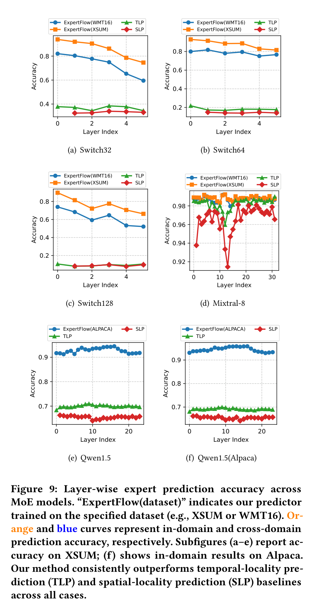
逐层 Bacc：批次并集 Recall 不等于逐 token 精确匹配 ExpertFlow: Efficient Mixture-of-Experts Inference via Predictive Expert Caching and Token Scheduling · Figure 9 · version v2 · PDF p.6 / printed p.not printed / not legible
Read original size
Original caption & source Figure 9: Layer-wise expert prediction accuracy across MoE models. “ExpertFlow(dataset)” indicates our predictor trained on the specified dataset (e.g., XSUM or WMT16). Or- ange and blue curves represent in-domain and cross-domain prediction accuracy, respectively. Subfigures (a–e) report ac- curacy on XSUM; (f) shows in-domain results on Alpaca. Our method consistently outperforms temporal-locality pre- diction (TLP) and spatial-locality prediction (SLP) baselines across all cases.
https://arxiv.org/pdf/2410.17954v2
Figure 9 的 accuracy 实际 Bacc 为批次激活 OR 并集上的 T P / ( T P + F N ) TP/(TP+FN)
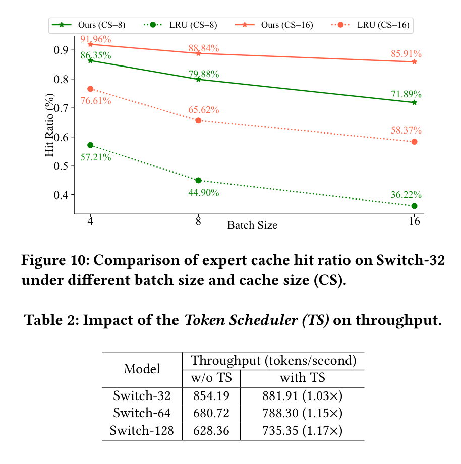
重调度的缓存与吞吐增量：给出绝对变化和配置 ExpertFlow: Efficient Mixture-of-Experts Inference via Predictive Expert Caching and Token Scheduling · Figure 10 and Table 2 · version v2 · PDF p.6 / printed p.not printed / not legible
Read original size
Original caption & source Figure 10: Comparison of expert cache hit ratio on Switch-32 under different batch size and cache size (CS).
https://arxiv.org/pdf/2410.17954v2
Figure 10 与 Table 2 分别回答重组后的 cache hit 和吞吐。Switch-32 在 CS8/BS16 从 36.22% 到 71.89%，CS16/BS4 从 76.61% 到 91.96%；差值是 35.67、15.35 个百分点。Switch-128 的 TS 消融约 628.36→735.35 tok/s，为约 1.17×。大 cache 原本已高命中，重组边际收益更小；这些分母与批次路线预测 Bacc 仍不同。
Read-ME：把路线从 backbone 解耦，才能提前规划缓存
Read-ME [P07] 于 2024-10-24 公开。它先将 dense 模型通过通道/激活剪枝重构成 MoE，再用因果语言模型损失与 routing distillation 学习，额外引入约 18M 的 autoregressive router。这个小 router 可以较早产生各层路线，随后 backbone 执行，是一条新的训练结构。
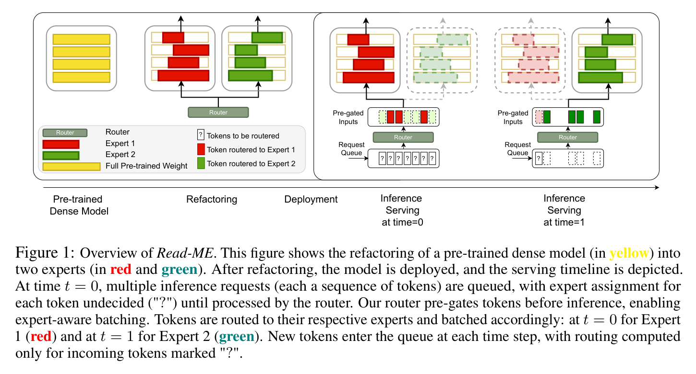
dense 重构为 MoE，再用独立 router 提供计划 Read-ME: Refactorizing LLMs as Router-Decoupled Mixture of Experts with System Co-Design · Figure 1 · version v1 · PDF p.2 / printed p.2
Read original size
Original caption & source Figure 1: Overview of Read-ME. This figure shows the refactoring of a pre-trained dense model (in yellow) into two experts (in red and green). After refactoring, the model is deployed, and the serving timeline is depicted. At time t = 0, multiple inference requests (each a sequence of tokens) are queued, with expert assignment for each token undecided ("?") until processed by the router. Our router pre-gates tokens before inference, enabling expert-aware batching. Tokens are routed to their respective experts and batched accordingly: at t = 0 for Expert 1 (red) and at t = 1 for Expert 2 (green). New tokens enter the queue at each time step, with routing computed only for incoming tokens marked "?".
https://arxiv.org/pdf/2410.19123v1
Figure 1 中黄色 dense 模型拆成红绿专家，小 router 决定路径；系统侧据此做预取、expert-aware batching 与淘汰。知道路线是相对重构后的新模型而言，不能视为无代价地读出原 dense 网络的某个隐藏专家选择。作者交替训练 router 100 步、expert 200 步，共八轮，使用八张 A100 80GB；系统推理在单 A100 80GB DeepSpeed。
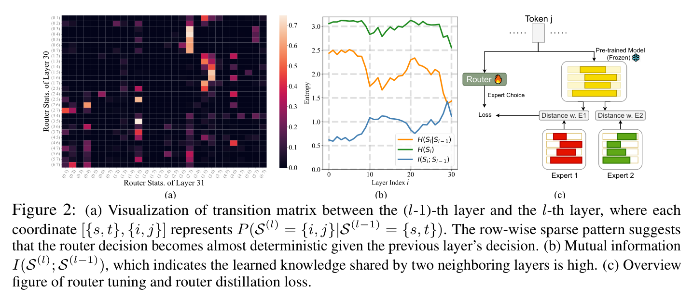
路径转移与路由解耦：局部相关性不等于已知完整路径 Read-ME: Refactorizing LLMs as Router-Decoupled Mixture of Experts with System Co-Design · Figure 2 · version v1 · PDF p.3 / printed p.3
Read original size
Original caption & source Figure 2: (a) Visualization of transition matrix between the (l-1)-th layer and the l-th layer, where each coordinate [{s, t}, {i, j}] represents P(S(l) = {i, j}|S(l−1) = {s, t}). The row-wise sparse pattern suggests that the router decision becomes almost deterministic given the previous layer’s decision. (b) Mutual information I(S(l); S(l−1)), which indicates the learned knowledge shared by two neighboring layers is high. (c) Overview figure of router tuning and router distillation loss.
https://arxiv.org/pdf/2410.19123v1
Figure 2 的转移矩阵用前后层专家集合为坐标，颜色显示条件概率或路径集中程度。它解释为什么独立 router 和任务适应训练可能让路线更可规划，但并非所有 checkpoint 都有确定的跨层映射。尤其 top-2 是集合，不能把一个专家 ID 的频率等同完整集合转移。
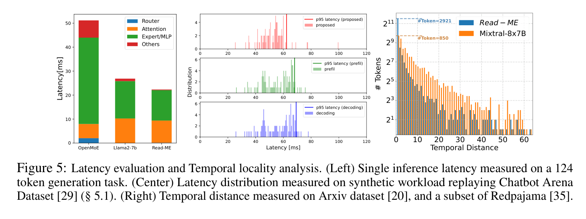
单请求与合成 workload：延迟与时间复用分别读 Read-ME: Refactorizing LLMs as Router-Decoupled Mixture of Experts with System Co-Design · Figure 5 · version v1 · PDF p.8 / printed p.8
Read original size
Original caption & source Figure 5: Latency evaluation and Temporal locality analysis. (Left) Single inference latency measured on a 124 token generation task. (Center) Latency distribution measured on synthetic workload replaying Chatbot Arena Dataset [29] (§ 5.1). (Right) Temporal distance measured on Arxiv dataset [20], and a subset of Redpajama [35].
https://arxiv.org/pdf/2410.19123v1
Figure 5 分别看 124-token 任务单请求延迟、合成 workload 分布及 locality。文中回放 Chatbot Arena 是作者的合成系统工作负载 ，不是本次测得的用户真实请求。已知路径可以少搬被近期淘汰又重用的专家，但请求并发共享 cache 仍会破坏单请求里的漂亮局部性。
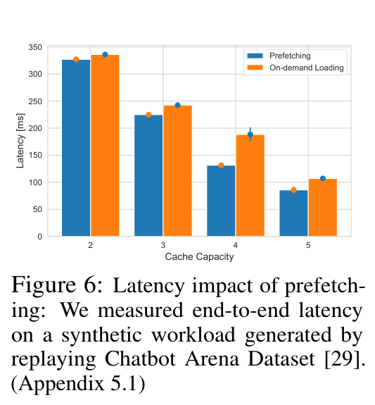
预取的端到端延迟：提前计划提供窗口但需要真实执行链 Read-ME: Refactorizing LLMs as Router-Decoupled Mixture of Experts with System Co-Design · Figure 6 · version v1 · PDF p.9 / printed p.9
Read original size
Original caption & source Figure 6: Latency impact of prefetch- ing: We measured end-to-end latency on a synthetic workload generated by replaying Chatbot Arena Dataset [29]. (Appendix 5.1)
https://arxiv.org/pdf/2410.19123v1
Figure 6 用同类合成回放比较预取和按需加载，作者报告最多约 30% latency gain。图展示的是完整系统的相对值，独立 router、缓存策略和 batching 条件需要一起保留。已知未来路线允许 Belady-inspired 策略，但实际预测模型、跨请求竞争和资源约束仍使它不等同无条件最优 MIN。
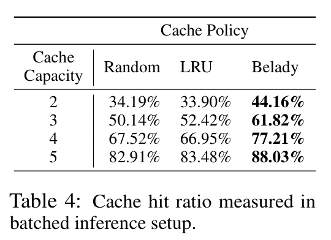
cache 大小时 Belady 的边际收益变化 Read-ME: Refactorizing LLMs as Router-Decoupled Mixture of Experts with System Co-Design · Table 4 · version v1 · PDF p.10 / printed p.10
Read original size
Original caption & source Table 4: Cache hit ratio measured in batched inference setup.
https://arxiv.org/pdf/2410.19123v1
Table 4 的 batch cache k2 下 Random/LRU/Belady 约 34.19/33.90/44.16%，k5 约 82.91/83.48/88.03%。小容量时较早知道重用次序更有价值；容量足够大时所有策略都趋于高命中。expert-aware batching 的 mean/p95 latency 增量约 5–6.1%/9.5–10%，独特专家数约 5.08/5.21→3.51。公开训练代码不自动证明所有运行时与 Belady 组件已完整发布，本次未运行这套新模型。
7. ProMoE：猜得准之外，还要抢对队列和先算已就绪专家
ProMoE [P08] 于 2024-10-29 公开，本文使用 v3。它训练每层两层 MLP 来预测未来专家，offline 训练约 1–2 GPU 小时、每层预测器约 2M 参数，CPU 预测约 200μs；训练/测试激活轨迹 9:1。更重要的是 prediction、prefetch、真实需求检查、queue 与专家执行次序连成一条链。
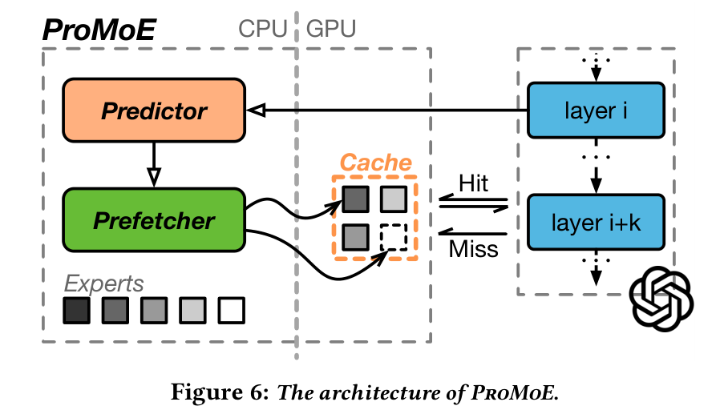
预测器、参数 worker 与推理线程协同 ProMoE: Fast MoE-based LLM Serving using Proactive Caching · Figure 6 · version v3 · PDF p.4 / printed p.not printed / not legible
Read original size
Original caption & source Figure 6: The architecture of ProMoE.
https://arxiv.org/pdf/2410.22134v3
Figure 6 的控制线与权重线应分别读。预测器产生候选，worker 搬参数，正式 gate hook 告知真实集合，运行时据此修改队列。每层网络不等于几行 top-k 的免费操作；CPU 推理和调度也会吃掉窗口。9:1 trace split 说明数据规模，是否完整避免 prompt 相关性仍需看公开协议。
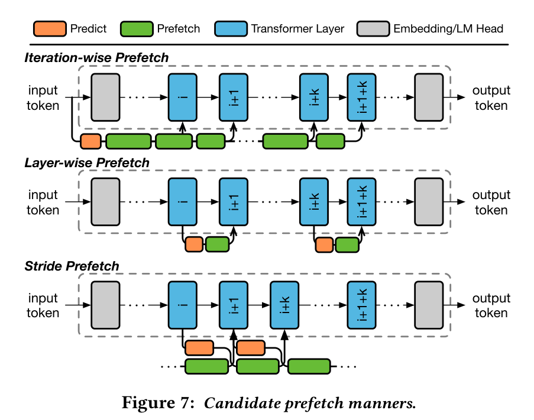
预测更远或等待更准：stride 选择是一项时机权衡 ProMoE: Fast MoE-based LLM Serving using Proactive Caching · Figure 7 · version v3 · PDF p.5 / printed p.not printed / not legible
Read original size
Original caption & source Figure 7: Candidate prefetch manners.
https://arxiv.org/pdf/2410.22134v3
Figure 7 比较不同发起位置。只在很近层猜，准确但来不及；向更远处预测，窗口大但 Recall 下降。stride 方案还让 CPU predictor 和 copy 互相流水。论文报告准确率下降约 5%，但相对百分比/百分点口径不够明确，本文保留原意而不自行计算。选 stride 要优化及时正确覆盖，而非纯 Recall 最大。
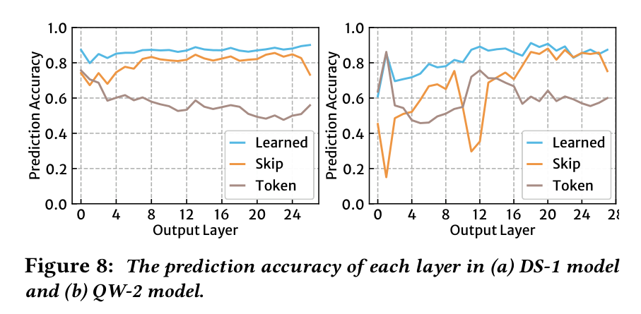
逐层预测：学习相关性优于某些廉价基线 ProMoE: Fast MoE-based LLM Serving using Proactive Caching · Figure 8 · version v3 · PDF p.5 / printed p.not printed / not legible
Read original size
Original caption & source Figure 8: The prediction accuracy of each layer in (a) DS-1 model and (b) QW-2 model.
https://arxiv.org/pdf/2410.22134v3
Figure 8 比较 token lookup、跳过 gate 和学习预测。原文示例约 58.3%、66.9% 与学习平均 84.7%，这些是论文的专家预测指标，不应无条件称为完整 top-k k
作者使用 GoodPred≈Accuracy×FetchRate 作启发式联合指标。它提醒人们要同时看预测和搬运，却不能一般性地证明两个边缘概率相乘就是联合成功率；第 15 节的实际计数反例 会显示差异。
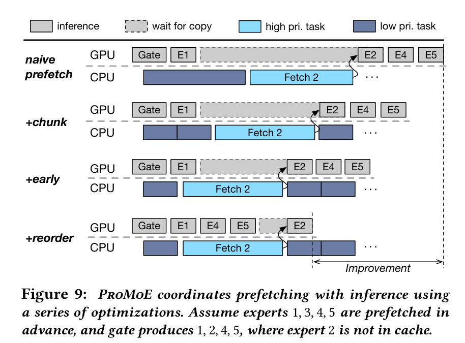
真实需求升级、分块复制和就绪优先执行 ProMoE: Fast MoE-based LLM Serving using Proactive Caching · Figure 9 · version v3 · PDF p.6 / printed p.not printed / not legible
Read original size
Original caption & source Figure 9: ProMoE coordinates prefetching with inference using a series of optimizations. Assume experts 1, 3, 4, 5 are prefetched in advance, and gate produces 1, 2, 4, 5, where expert 2 is not in cache.
https://arxiv.org/pdf/2410.22134v3
Figure 9 的预测为 1、3、4、5，真实 gate 要 1、2、4、5。系统取消尚未启动的错误 3，升级漏掉的 2；已经 ready 的 1/4/5 先计算。三个 FFN 参数矩阵分块，使新 demand 最多被一个正在搬的块拖住，而不是一个完整专家。实际输出仍按真实 gate 和专家聚合，重新加法次序可能改变浮点末位。
冻结 C++ 路径具体是 reorder_experts 将 ready/ongoing/partial/missing 分组，preempt_one_expert 将真实剩余块放入 precise_job_queue，pop_next_task 优先 precise 队列。这里的 preempt 是队列和块边界优先级，不是硬件 DMA 中途被取消。
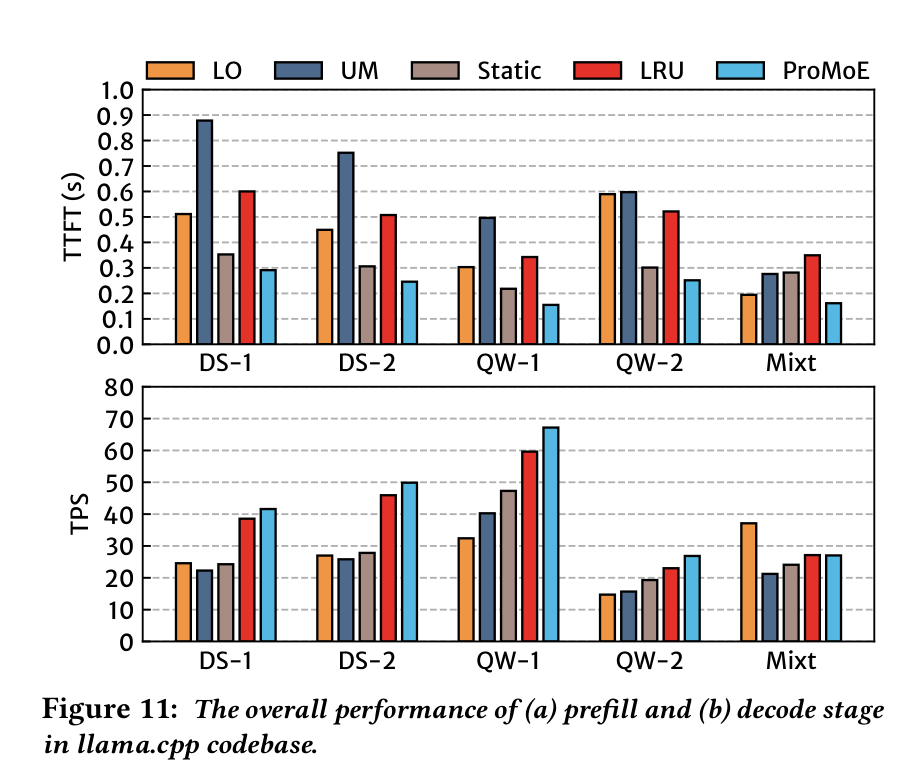
llama.cpp 主结果：更快的框架使预取窗口变短 ProMoE: Fast MoE-based LLM Serving using Proactive Caching · Figure 11 · version v3 · PDF p.9 / printed p.not printed / not legible
Read original size
Original caption & source Figure 11: The overall performance of (a) prefill and (b) decode stage in llama.cpp codebase.
https://arxiv.org/pdf/2410.22134v3
Figure 11 分 prefill 与 decode 对比。RTX4090 24GB、i9-14900K、128GB、ShareGPT、batch 1；DS/QW1 的 FP16 与 QW2/Mixtral 的 INT4 分组。作者在 transformers 上相对 LRU decode 平均约 1.31×，在 llama.cpp 约 1.09×。Python 开销小了以后可藏搬运的时间反而减少；Mixtral 25% 专家同时激活、权重大时，llama.cpp CPU 计算 LO 路线还能更快。
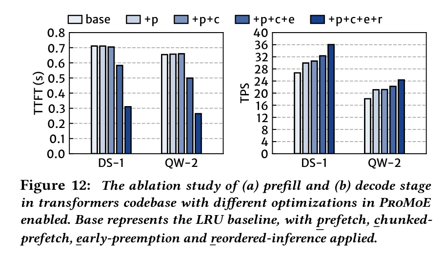
transformers 消融：单纯 prefetch 在 prefill 可能反而慢 ProMoE: Fast MoE-based LLM Serving using Proactive Caching · Figure 12 · version v3 · PDF p.10 / printed p.not printed / not legible
Read original size
Original caption & source Figure 12: The ablation study of (a) prefill and (b) decode stage in transformers codebase with different optimizations in ProMoE enabled. Base represents the LRU baseline, with prefetch, chunked- prefetch, early-preemption and reordered-inference applied.
https://arxiv.org/pdf/2410.22134v3
Figure 12 将 predictor、early preemption、reorder 等逐个启用。prefill 真实 gate 要很多专家，盲目的提前搬运可能阻塞必需任务；只有正确的升级和重排序才能把预测转化成端到端收益。读柱状图必须看整个组合和基线，而不能把末柱加速归给“MLP 比 skipped gate 更准”。
llama.cpp 消融：同一思想在不同调用链上收益不同 ProMoE: Fast MoE-based LLM Serving using Proactive Caching · Figure 13 · version v3 · PDF p.10 / printed p.not printed / not legible
Read original size
Original caption & source Figure 13: The ablation study in llama.cpp codebase, following the same setup and naming convention as Figure 12.
https://arxiv.org/pdf/2410.22134v3
Figure 13 以同样组件名称在另一个框架测量，改善幅度和阶段分布发生变化。它给出很实用的迁移原则：预测器准确率即使不变，gate hook 的调用时机、线程调度、参数块粒度和 kernel 空隙都能改变结果。移植时应检查 per-op 时序与真实等待，不能仅迁移模型参数然后预期复现原柱高度。
8. 2025：跨层输入选择、多批次与 attention 窗口
Fate：用更接近未来 gate 的输入，再扩大候选集
Fate [P11] 于 2025-02-17 公开，本文核验 v2 的当前标题。其 Cross-Layer Gate 把下一层 gate 与 GPU 当前计算并行，在 CPU 上使用较早 hidden state 预测。它还扩大 top 候选、调整浅层缓存和 prefill 专家执行次序；完整方案含自适应 INT4/INT2，因此预取语义与量化质量必须分开。
三个早期输入：相似度、decode 预测与 prefill overlap 不同 Fate: Fast Edge Inference of Mixture-of-Experts Models via Cross-Layer Gate · Table 1 · version v2 · PDF p.6 / printed p.not printed / not legible
Read original size
Original caption & source Table 1. Average cosine similarity and prefetch accuracy between 𝐺𝑎𝑡𝑒_𝑖𝑛𝑖+1 and the following inputs: 𝐴𝑡𝑡𝑛_𝑖𝑛𝑖+1, 𝐺𝑎𝑡𝑒_𝑖𝑛𝑖and 𝐴𝑡𝑡𝑛𝑖𝑛_𝑖.
https://arxiv.org/pdf/2502.12224v2
Table 1 比较下一层 attention 输入、上一层 gate 输入和更早 attention 输入与真实未来 gate 输入的关系。余弦相似度约 93.05/88.83/83.84%，对应 decode 预测约 83.99/78.79/76.94%。prefill 超过 99.6% 的 overlap 来自批次聚合，不能说每个 token 的 top-k k
交叉层 gate、候选扩展和正式需求校正 Fate: Fast Edge Inference of Mixture-of-Experts Models via Cross-Layer Gate · Figure 5 · version v2 · PDF p.7 / printed p.not printed / not legible
Read original size
Original caption & source Figure 5. Workflow of cross-layer expert prefetch.
https://arxiv.org/pdf/2502.12224v2
Figure 5 的 CPU/GPU 分支显示 next gate 在较早输入上计算，提前搬下一层候选。扩大到 top quartile 可包住原来差一点漏掉的专家，使 Recall 提高但搬更多字节；这种“多猜几个”不能只报告覆盖而不报告 Precision、cache 污染与队列长度。实际需求到来后需核对真实 gate；量化策略则另影响真实专家数值。
逐层扩展候选覆盖：97.15% 与原 top-k 命中不是同指标 Fate: Fast Edge Inference of Mixture-of-Experts Models via Cross-Layer Gate · Figure 7 · version v2 · PDF p.7 / printed p.not printed / not legible
Read original size
Original caption & source Figure 7. Average accuracy of expert prefetching at each layer.
https://arxiv.org/pdf/2502.12224v2
Figure 7 显示各层预测覆盖，在扩大候选后报告约 97.15%。这与原始 78.79% 的较窄集合、cache hit 约 99% 各自回答不同问题。浅层缓存多会把原本预测失败变成无等待的 hit，不能直接说预测器从 78.79% 提升到 99%。对工程决策，应同步画预测数、字节和 timely recall。
快慢链路条件：较差平台上 EAP 有时输给按需 Fate: Fast Edge Inference of Mixture-of-Experts Models via Cross-Layer Gate · Figure 12 · version v2 · PDF p.10 / printed p.not printed / not legible
Read original size
Original caption & source Figure 12. Decoding speeds of Fate, EAP, and Load on De- mand in various scenarios.
https://arxiv.org/pdf/2502.12224v2
Figure 12 分高低 PC 和多种场景比较 decoding speed。高端 RTX3090 被配置为 PCIe3×16 约 16GB/s、i9-9900X、128GB；低端 GTX1080Ti 被强制 PCIe1×16 约 4GB/s、E5-2650v4、64GB。高端 Qwen 报告约 14 tok/s；低端 EAP 部分场景比 Load On Demand 更慢，原因包括预测输入复制与误取占道。图证实“有预测”不是稳定获益保证。
INT4/INT2 的质量代价：系统完整方案不是无损结论 Fate: Fast Edge Inference of Mixture-of-Experts Models via Cross-Layer Gate · Table 3 · version v2 · PDF p.11 / printed p.not printed / not legible
Read original size
Original caption & source Table 3. The impact of Fate on the inference accuracy of two models on two PCs.
https://arxiv.org/pdf/2502.12224v2
Table 3 的 Qwen GSM8K 从 BF16 62.4 到高/低 PC 约 60.2/59.9。论文 prefill 混 INT4/INT2，decode INT4；输入 128/256/512 的 prefill 和 input≤64、output≤1024 的 decode 设置不同。这个表必须和速度一起读：若业务要求保持 BF16 的能力，应单独评估只使用预取的变体，不能照搬完整 Fate 的吞吐再声称不改模型质量。
LayerScope：多 batch 下，不应逐层把所有 miss 都搬到 GPU
LayerScope [P12] 于 2025-09-28 公开，本文核验 v2，正式 venue 为 ICS 2026。它面向 legacy server，多 token 的专家负载很不均匀；LLaPor 用当前 hidden、真实专家 ID 和 gate 权重预测下一层热点，PreSched 同时考虑当前与下一层 CPU/GPU 分工，AsyncIO 提供 pinned 批搬运。
LLaPor、PreSched、AsyncIO 的闭环 LayerScope: Predictive Cross-Layer Scheduling for Efficient Multi-Batch MoE Inference on Legacy Servers · Figure 7 · version v2 · PDF p.5 / printed p.not printed / not legible
Read original size
Original caption & source Figure 7: System overview of LayerScope.
https://arxiv.org/pdf/2509.23638v2
Figure 7 中真实路由与未来预测都进入调度器：对当前 miss 可以搬权重，也可以 CPU 算，把有限 PCIe 留给下一层更有价值的任务。多个 batch 让 token-heavy 专家值得搬，而少量 token 的专家可能适合 CPU。这个系统问题不能缩减为“下一层预测更准确”。
隐藏向量压缩与当前专家信息：预测的是未来热点 LayerScope: Predictive Cross-Layer Scheduling for Efficient Multi-Batch MoE Inference on Legacy Servers · Figure 8 · version v2 · PDF p.5 / printed p.not printed / not legible
Read original size
Original caption & source Figure 8: Architectural comparison between the standard gating network and LLaPor.
https://arxiv.org/pdf/2509.23638v2
Figure 8 比较标准 gate 与 LLaPor：PCA 将 hidden 4096 压到边缘组 256、中间组 512，再结合当前专家与权重；不同层组采用不同网络与 loss。训练用 128 个 ShareGPT batch×512 tokens，30 epochs，作者报告每 epoch 约 1.2s/A100；online 64-token 组误差超过 10% 时，用 128-token 小样本更新约 1.8ms。当前 tuple 并不普遍包含未来 attention 的完整 KV 状态，不能当成未来 gate 的确定性充分统计量。
跨当前和下一层的调度：给未来预取留带宽 LayerScope: Predictive Cross-Layer Scheduling for Efficient Multi-Batch MoE Inference on Legacy Servers · Figure 9 · version v2 · PDF p.6 / printed p.not printed / not legible
Read original size
Original caption & source Figure 9: Comparison of PreSched scheduling versus layer- by-layer scheduling strategies.
https://arxiv.org/pdf/2509.23638v2
Figure 9 对比逐层贪心与 PreSched。如果当前层一个 miss 在 CPU 很快能算完，仍把它搬到 GPU 会挡住下一层的大任务；跨层方案可以同时用 CPU 和 I/O。图中的串行复制、pending token 排序和 ready GPU 专家先算都有约束，论文成本模型不等于对任意异构任务的全局最优调度证明。
多 batch 端到端吞吐：CPU 指令集和计时边界保留 LayerScope: Predictive Cross-Layer Scheduling for Efficient Multi-Batch MoE Inference on Legacy Servers · Figure 11 · version v2 · PDF p.9 / printed p.not printed / not legible
Read original size
Original caption & source Figure 11: Throughput comparison between LayerScope and baseline systems across models and hardware.
https://arxiv.org/pdf/2509.23638v2
Figure 11 使用 V100/PCIe3 或 A100/PCIe4、Gold6230R，显存预算 24GB、BF16，batch 4–64、input512/output64、重复十次。A100 batch64 的 DS/Qwen/Moon 约 41.7/17.4/59.5 tok/s；这是 generated tokens 除以总 prefill+decode 时间。所有 baselines 加入优化 pinned I/O 与 hot-expert table，禁用压缩，不能用其他论文纯 decode、INT4、batch1 柱做统一排名。
去掉调度与 I/O 的损失，未必小于去掉 predictor LayerScope: Predictive Cross-Layer Scheduling for Efficient Multi-Batch MoE Inference on Legacy Servers · Figure 13 · version v2 · PDF p.10 / printed p.not printed / not legible
Read original size
Original caption & source Figure 13: Throughput impact of ablating individual compo- nents in LayerScope.
https://arxiv.org/pdf/2509.23638v2
Figure 13 的组件消融显示 Mixtral/A100/b64 关闭 PreSched 吞吐下降约 54.1%，关闭 AsyncIO 约 49.3%；Moon 的 LLaPor 在 b32 下约下降 20.2%。这些是从完整系统移除组件的相对降幅，彼此有交互，不能相加。它支持链路级优化的重要性：预测正确但没有 pinned buffer、正确批搬运和跨层分工，仍会大量等待。
Top 排名容忍与模型开销：高百分比不等于每 token 无误 LayerScope: Predictive Cross-Layer Scheduling for Efficient Multi-Batch MoE Inference on Legacy Servers · Table 4 · version v2 · PDF p.11 / printed p.not printed / not legible
Read original size
Original caption & source Table 4: Performance Evaluation of LLaPor.
https://arxiv.org/pdf/2509.23638v2
Table 4 的 hot-expert 评测按 token 负载排名，Top4 允许落入真实 Top6，所有 Top2 100% 也不意味着逐 token top-2 全集合匹配。预测耗时约 0.12–0.48ms，每层参数约 0.5–2.8MB。对于批次需要的热点，这类排名评测有价值；对 token 级替代路由，必须另测真正 TP/FP/FN。
Pre-Attention：首层也能预测，但约 1ms 窗口不够搬所有专家
Pre-Attention Expert Prediction and Prefetching [P14] 于 2025-11-10 公开，核验 v1。它把同层 attention 输入送到 CPU 预测器，GPU 并行算 attention，试图在真实 MoE gate 出来前得到专家候选。这个设计自然解决首个 MoE 层没有上一层可借的问题。
预测器架构：轻量两层网络与更复杂网络的选择 Pre-Attention Expert Prediction and Prefetching for Mixture-of-Experts Large Language Models · Figure 4 · version v1 · PDF p.5 / printed p.not printed / not legible
Read original size
Original caption & source Figure 4. Expert Selector Architecture Comparison
https://arxiv.org/pdf/2511.10676v1
Figure 4 比较两层 linear+SiLU 和含 GELU、BatchNorm、dropout 的网络。训练数据为 MMLU 收集的约 10M 激活记录，Titan RTX24GB、128GB host，30 epochs；标签是正式路由选中的多专家。weighted BCE 加 pair ranking loss 处理选中/未选中不平衡，论文 margin 与 ranking 权重约 0.1。单 epoch 表中 weighted BCE 90.19% 与 ranking 89.95% 并不支持 ranking 永远更好。
层间预测结果：学习相关性不能变成排名保持定理 Pre-Attention Expert Prediction and Prefetching for Mixture-of-Experts Large Language Models · Figure 7 · version v1 · PDF p.7 / printed p.not printed / not legible
Read original size
Original caption & source Figure 7. Expert Prediction Accuracy Architecture 2
https://arxiv.org/pdf/2511.10676v1
Figure 7 显示 architecture2 的层间结果，说明同层较早 hidden state 含有可学习信号。但 attention 混合 token，LayerNorm 有可学习 gamma/beta，不普遍保持另一套 gate 的专家排序；只有同一个 score vector 的 softmax 保持该向量内部排序。原文相关论述不能升级为“attention 前后 top-k 必然近似相同”的理论保证。
预测表与实测传输表放在一起：准确不等于及时 Pre-Attention Expert Prediction and Prefetching for Mixture-of-Experts Large Language Models · Tables 4–5 · version v1 · PDF p.8 / printed p.not printed / not legible
Read original size
Original caption & source Table 4. Prediction accuracy of the first layer on three models.
Table 5. Expert Loading Performance (6 experts, 99MB total)
https://arxiv.org/pdf/2511.10676v1
Tables 4–5 第一层精确集合匹配约为 DS-V2-Lite 93.03%、Qwen3 94.69%、Phi 97.62%；top1-in-true-k 约 98.85/99.55/98.95%，扩大 DS 候选 10 vs 真 k6 约 98.65%。这些指标不能与 Fate 的逐专家预测值混算。传输表更关键：6 个专家共 99MB，host→GPU 4–9.5ms，SSD→GPU 33.5–49.8ms，而文中 attention 约 0.7385–1.1279ms。即使预测完全正确，单靠这段 attention 也不能隐藏全部六个专家。
执行流水线是估算：零加载等待需额外条件 Pre-Attention Expert Prediction and Prefetching for Mixture-of-Experts Large Language Models · Figure 8 · version v1 · PDF p.9 / printed p.not printed / not legible
Read original size
Original caption & source Figure 8. Execution pipelines of a Transformer layer.
https://arxiv.org/pdf/2511.10676v1
Figure 8 把 prediction/copy 移到 attention 之前或期间，是方法示意而非独立端到端 tok/s 实测。作者估计约 0.27–0.64ms 加载等待，但这依赖 cache、可隐藏拷贝量与更长计算窗口；“93% 不等专家”不能从 93% 精确集合匹配直接推出。文中 5.78M×2 bytes 写成 16.5MB 也存在内部算术不一致，本篇使用原传输表的 99MB 并明确其条件，不再从该矛盾尺寸反推性能。
9. 用草稿模型多争取时间：SP-MoE
SP-MoE [P13] 于 2025-10-11 公开，本文核验 v2。投机解码里，较小 draft model 先产生候选 token，较大 target model 验证；draft 计算不仅提供 token，还能给未来 target expert 预取提供时间和特征。与前面 MLP 路线不同，SP-MoE 将 draft attention 输出送入对应的 target gate ，提前猜 target 专家。
草稿特征经 target gate 预测专家，真正 target 仍验证 SP-MoE: Speculative Decoding and Prefetching for Accelerating MoE-based Model Inference · Figures 6–7 · version v2 · PDF p.5 / printed p.not printed / not legible
Read original size
Original caption & source Figure 6. Overview of SP-MoE.
Figure 7. Cosine similarity and prediction accuracy across layers between draft and target models.
https://arxiv.org/pdf/2510.10302v2
Figures 6–7 左边是 draft、CPU prefetch worker 与 target 的链路，右边比较跨层余弦与预测。Mistral7B/Mixtral、Phi-mini/Phi3.5、DeepSeek-Lite 配对提供相容 hidden 尺寸与层映射；不能假设任何 draft 与任意 target 可直接接同一 gate。Mixtral top1 预测约 88%，HumanEval 的 token 接受率约 97% 是另一指标。论文以 greedy accept/reject 为前提，未证明一般随机采样投机校正。
目标正式运行时仍使用真实 hidden、真实 gate 与 demand-load，因而专家预取本身不改目标路由。提前的 event 标记 score ready，CPU worker 随后发起复制，target 优先执行 resident 专家。draft 拒绝、预测错误和缓存污染都可能增加工作，不能无条件承诺最坏情况下等于无预取。
TPOT 主结果：1.35× 与 2.3× 的比较集合不同 SP-MoE: Speculative Decoding and Prefetching for Accelerating MoE-based Model Inference · Figure 9 · version v2 · PDF p.9 / printed p.not printed / not legible
Read original size
Original caption & source Figure 9. TPOT comparison across four datasets: SP-MoE achieves 1.35× average speedup over baselines (peak 1.75× vs. Mixtral-Offloading on HumanEval in Env. 1 and minimum 1.12× vs. AdapMoE on Wikitext-103 in Env. 2).
https://arxiv.org/pdf/2510.10302v2
Figure 9 在 RTX3090/4090/A10040GB、主存 512GB–1TB、batch1、输出100 下比较 HumanEval、BigBench、WikiText-103、MMLU-Pro。作者对应这一图平均约 1.35×，最大约 1.75×、最小约 1.12×；另一个模型聚合的 2.3× 数字分母不同，不能并列当成同一平均。Mixtral 单专家约 336MB，实际 top2 只预取 top1 控制负担，Phi/DS 的预测数又不同。
cache hit 更低却更快：命中率未包含时间与成本 SP-MoE: Speculative Decoding and Prefetching for Accelerating MoE-based Model Inference · Table 3 · version v2 · PDF p.10 / printed p.not printed / not legible
Read original size
Original caption & source Table 3. Hit rate performance across datasets, models, and frameworks. MO indicates Mixtral-Offloading and MI indicates MoE-Infinity.
https://arxiv.org/pdf/2510.10302v2
Table 3 中 Mixtral SP-MoE hit 约 20.89%，AdapMoE 42.14%；Phi 约 42.72% vs 49.43%。SP-MoE 仍可更快，说明原始 hit ratio 没有编码一次 miss 的字节、CPU 回退、草稿窗口和及时到达。比较完整方案还要分清 AdapMoE 的近似 gating 与 SP 的 target 路由保持，不能仅按照 hit 高低选择。
worker 与 batching 消融：投机窗口本身不会自动加载 SP-MoE: Speculative Decoding and Prefetching for Accelerating MoE-based Model Inference · Figure 12 · version v2 · PDF p.10 / printed p.not printed / not legible
Read original size
Original caption & source Figure 12. Ablation on three models. Baseline (s) repre- sents the vanilla offloading scheme integrated with SD, with vanilla prefetch during the drafting stage (vp), worker prefetch during drafting (wp) and batched I/O operations (b) applied.
https://arxiv.org/pdf/2510.10302v2
Figure 12 从 vanilla offloading+SD 起逐项启用预测与 worker 等，baseline TPOT Mix/Phi/DS 约 1.40/0.48/0.32s。同步在 draft 内加载、后台 worker、目标验证批处理改变不同等待位置。每项要看启动点、copy 完成点和 target 真正依赖点；投机 token 数越大也可能占用 KV 和验证预算，不能把草稿步数当作免费增加的预取距离。
评测协议存在一处需保留的未确认字段：论文称 MMLU-Pro “57 subjects”，官方 MMLU-Pro 是 14 domains、超过 12K 问题，通常十选项；57 更像原 MMLU 的 subject 数。本文不擅自修正成一个已确认 protocol，也不把那组质量解释为官方标准设置。HumanEval 的 pass@k 与样本数、执行测试绑定，acceptance rate 更不是代码正确率。
10. 让路线更容易预测：Sticky Routing 与时空表
Sticky Routing：训练时给相邻 token 一致性偏好
Sticky Routing [P15] 首次 submission 为 2026-06-12 ，编号虽为 2607.08780，本文按原始历史记录日期。它从训练目标直接提高相邻 token 的专家复用：若语言模型本来允许多条近似有效路线，正则项可以鼓励选择连续、缓存友好的路线。它不是对现有大型 checkpoint 的透明预取插件。
原文一致性损失：惩罚邻近 token 的 gate 概率变化 Sticky Routing: Training MoE Models for Memory-Efficient Inference · Equations 9–10 · version v1 · PDF p.5 / printed p.5
Read original size
Original caption & source 4.1 Routing Consistency Loss Let L denote the number of MoE layers in the model. For layer ℓand a sequence of T tokens, let g(ℓ) t ∈RN be the softmax gate probability vector produced by the router of layer ℓfor token t. We define the per-layer consistency loss as: L(ℓ) cons = 1 T −1 T X t=2 g(ℓ) t −g(ℓ) t−1 2 2. (9) The full consistency loss aggregates over all MoE layers: Lcons = 1 L L X ℓ=1 L(ℓ) cons. (10)
https://arxiv.org/pdf/2607.08780v1
原文 equations9–10 是核心机制。设一条序列长度 T T L L g t ( l ) g_t^{(l)}
ℒ c o n s = 1 L ( T − 1 ) ∑ l = 1 L ∑ t = 2 T ‖ g t ( l ) − g t − 1 ( l ) ‖ 2 2 . \mathcal{L}_{\mathrm{cons}}=
\frac{1}{L(T-1)}\sum_{l=1}^{L}\sum_{t=2}^{T}
\left\|g_t^{(l)}-g_{t-1}^{(l)}\right\|_2^2. LaTeX source \mathcal{L}_{\mathrm{cons}}=
\frac{1}{L(T-1)}\sum_{l=1}^{L}\sum_{t=2}^{T}
\left\|g_t^{(l)}-g_{t-1}^{(l)}\right\|_2^2. 这里相邻只在同一独立序列内部计算；不能把 batch 尾部与下条序列开头连接。概率距离小鼓励平滑，却不保证 top-k 集合不变：两个专家分数极接近时，微小变化仍会交换排序。被冻结的 losses.py 能验证这种按 [B,T,E] 的 soft consistency，不能证明全部 hard-window 变体。
语言模型损失、局部一致性和均衡一起训练 Sticky Routing: Training MoE Models for Memory-Efficient Inference · Equation 11 · version v1 · PDF p.6 / printed p.6
Read original size
Original caption & source The full training loss is: L = LCE + λ Lcons + µ Lbal, (11) where LCE is the standard next-token cross-entropy loss, Lbal is the load-balancing loss from eq. (6), and λ, µ ≥0 are hyperparameters. We recommend µ = 0.01 following Fedus et al. [2022] and treat λ as the primary experimental variable.
https://arxiv.org/pdf/2607.08780v1
Equation11 把标准 next-token CE、一致性和负载均衡加权相加：
ℒ = ℒ C E + λ ℒ c o n s + μ ℒ b a l . \mathcal{L}=\mathcal{L}_{\mathrm{CE}}+
\lambda\mathcal{L}_{\mathrm{cons}}+
\mu\mathcal{L}_{\mathrm{bal}}. LaTeX source \mathcal{L}=\mathcal{L}_{\mathrm{CE}}+
\lambda\mathcal{L}_{\mathrm{cons}}+
\mu\mathcal{L}_{\mathrm{bal}}. λ , μ \lambda,\mu
22M 小模型的 PPL 与 trace cache：不能外推大型 GPU 性能 Sticky Routing: Training MoE Models for Memory-Efficient Inference · Table 7 · version v1 · PDF p.13 / printed p.13
Read original size
Original caption & source Table 7: Results on WikiText-2 (Medium model, ≈22M parameters, 4 experts, top-2 routing). Columns as in table 6. Highlighted row is the recommended operating point.
https://arxiv.org/pdf/2607.08780v1
Table 7 用 WikiText-2、约 22M 参数、4 专家 top2、cache2、10K AdamW steps、单个固定 seed42。选择 λ = .05 \lambda=.05 λ = .50 \lambda=.50
Pareto 点：更高 hit 与更低 PPL 的局部权衡 Sticky Routing: Training MoE Models for Memory-Efficient Inference · Figure 1 · version v1 · PDF p.14 / printed p.14
Read original size
Original caption & source Figure 1: Quality–locality Pareto frontier (cache hit rate vs. perplexity) on WikiText-2 for small and medium models. Each point represents one method configuration; higher cache hit rate and lower perplexity are both desirable (upper-left is better). StickyMoE Soft and Soft-Hard variants trace a smooth Pareto frontier, consistently achieving higher cache hit rates at comparable or better perplexity than the Hard baseline, ReMoE, and Oracle-MoE. ReMoE fails to meaningfully improve cache hit rate at either scale, clustering near the Baseline point.
https://arxiv.org/pdf/2607.08780v1
Figure 1 横轴 cache hit，纵轴 perplexity，每个点是方法配置，小/中模型分组。希望向更高 hit、更低 PPL 移动，不能只挑右边点忽略损失。论文 ReMoE baseline 是 router-only 缩短训练模拟，Oracle 也简化；不代表正式实现的全面失败。路由集合是否改变也不与 cache miss 一一对应：集合变了仍可部分重用，集合不变但被别层挤出也可能 miss。
Spatio-Temporal Prefetching：小计数表结合跨层与上一 token
A Spatio-Temporal Expert Prefetching Framework [P16] 首次公开于 2026-06-13，核验 v1。它用跨层 co-activation correlation table，简称 CCT，加上一 token 各层专家 history table，简称 HT，给未来候选打分。无需学习大预测器，适合硬件控制逻辑；真正 gate 仍检查并补齐漏报。
离线 CCT 与在线 HT：两种相关性叠加 A Spatio-Temporal Expert Prefetching Framework for Efficient MoE-based LLM Inference · Figure 3 · version v1 · PDF p.3 / printed p.not printed / not legible
Read original size
Original caption & source Figure 3: Overview of the proposed ST-MoE framework. The framework consists of two phases: profiling and runtime. The profiling phase constructs the History Table (HT) for each MoE layer and the Cross-layer Correlation Table (CCT), while the runtime phase uses these tables to dynamically predict the experts likely to be activated.
https://arxiv.org/pdf/2606.15453v1
Figure 3 先 profiling 构建相邻层专家共激活表，再 runtime 依据当前专家查下一层候选，叠加上一 token 的同层历史。CCT 用 2-bit 饱和计数 0–3，HT 每 token 根据真实路由更新。卡方显著性说明存在统计依赖，不意味着任意 top-k k k 2 / E k^2/E
EPU、内存和计算流水线：硬件资源约束必须保留 A Spatio-Temporal Expert Prefetching Framework for Efficient MoE-based LLM Inference · Figures 4–5 · version v1 · PDF p.6 / printed p.not printed / not legible
Read original size
Original caption & source Figure 4: Overview of the proposed ST-MoE hardware plat- form, which consists of four key components: the Expert Prediction Unit (EPU) for algorithm-level prediction strat- egy, the router for gating network, the unified computing engine for key matrix computations, and the Expert Map- ping Unit (EMU) for workload distribution.
Figure 5: Architecture overview of the Processing Element (PE). It includes two input buffers for input token-related data and weight data, respectively, an NxN MAC array for matrix-matrix multiplication, and a dedicated output buffer for storing intermediate and final results. The MUX and De- MUX units are controlled by the local controller to manage local data movement.
https://arxiv.org/pdf/2606.15453v1
Figures 4–5 把 Expert Prediction Unit、attention、MoE 计算与 memory controller 连接。作者用 TSMC40nm/1GHz 综合与 cycle-accurate 模拟、8 个 PE×64² MAC、BF16、256GB/s DRAM，16MB expert/KV 与 4MB activation 资源。图示预测接近 attention 尾部发起，不能据此假设享有完整 attention 窗口。它不是本次在真实 NPU 的性能测量。
周期和能耗不能混成一项“硬件更快更省” A Spatio-Temporal Expert Prefetching Framework for Efficient MoE-based LLM Inference · Figure 8 · version v1 · PDF p.9 / printed p.not printed / not legible
Read original size
Original caption & source Figure 8: (a) Normalized execution time (cycles) of ST-MoE compared to state-of-the-art baselines across diverse LLMs and real-world applications. (b) Normalized execution time breakdown for Qwen1.5 on CNN/DM in the article summarization task. All results are normalized to the GPU baseline, and lower is better.
https://arxiv.org/pdf/2606.15453v1
Figure 8 的纵轴是 normalized execution cycles，按模型和应用比较；作者报告对 GPU latency 平均下降约 60%、对 pre-gated 约 33%。GPU 与定制加速器资源、带宽与归一化方式不同，不能排名实际端侧芯片。另一个能耗结果约比 GPU 高 10% ，所以缩短执行周期并不等于整体能耗降低。
算法 2 的 score 更新与正文加法存在不一致 A Spatio-Temporal Expert Prefetching Framework for Efficient MoE-based LLM Inference · Algorithm 2 · version v1 · PDF p.5 / printed p.not printed / not legible
Read original size
Original caption & source Algorithm 2 Expert Predict Function 1: Input: 𝑡: current token index, 𝐸𝑖: experts selected at layer 𝑖for token 𝑡, CCT: cross-layer correlation table, HT: history table 2: Output: PrefetchSet: experts to prefetch for layer (𝑖+ 1) 3: Initialize 4: ConfScore[𝐸] ←0 for all experts 𝐸 5: for all expert 𝑒∈𝐸𝑖do 6: for all candidate expert 𝑓∈CCT[𝑒] do 7: ConfScore[𝑓] ←ConfScore[𝑓] + CCT[𝑒][𝑓] 8: for all expert ℎ∈HT do 9: ConfScore[ℎ] ←1 10: for all expert ℎ∈HT do 11: ConfScore[ℎ] ←ConfScore[ℎ] + 1 12: PrefetchSet ←{ 𝑓| ConfScore[𝑓] ≥2 } 13: return PrefetchSet
https://arxiv.org/pdf/2606.15453v1
Algorithm2 是必要的原始算法截图。正文式声称将 CCT 与 HT 分数相加，但 line9 给 ConfScore[h] ← 1 会覆盖前面同一候选的累计，line11 又加一；这和前述公式不完全一致。本文将它列为实现待核验字段，不自行把伪代码改成“已经工作”的算法。阈值2和计数器也不是已校准概率，不能把分数直接当作 confidence 的概率值。
论文 profiling/eval 分割含 CNN/DM35K/145K、MATH1.5K/6.5K、HumanEval30/134；某些模型层数与专家配置描述仍模糊。相同任务的 prompt split、token 长度、数据集版本与模拟资源需要一并公开，才适合进一步比较设计收益。
11. 瓶颈转移：storage roofline 与 FreeToken
Budgeting Bytes：完美预测仍救不了持续字节饱和
Budgeting Bytes [P17] 的首次 submission 为 2026-07-29 ，虽编号 2609.04238。它将专家“何时可知”分成 A0 嵌入/lookup 已知、A1 attention 前可知、A2 attention 后太晚、A3 RAM 常驻，并同时约束每 token 字节与存储容量。早知道能利用窗口，却不能让超过通道总量的字节消失。
一种抽象 roofline 为：
t o k e n s / s ≤ min ( B s t o r a g e b y t e s / t o k e n , C c o m p u t e o p e r a t i o n s / t o k e n ) . \mathrm{tokens/s}\le
\min\left(
\frac{B_{\mathrm{storage}}}{\mathrm{bytes/token}},
\frac{C_{\mathrm{compute}}}{\mathrm{operations/token}}
\right). LaTeX source \mathrm{tokens/s}\le
\min\left(
\frac{B_{\mathrm{storage}}}{\mathrm{bytes/token}},
\frac{C_{\mathrm{compute}}}{\mathrm{operations/token}}
\right). B s t o r a g e B_{\mathrm{storage}} C c o m p u t e C_{\mathrm{compute}}
质量与 bytes/token 前沿：图不是实际 tok/s 排行 Budgeting Bytes: A Windowed Storage Roofline and Dual-Budget Architecture Ablations for Storage-Bound LLM Decoding · Figure 1 · version v1 · PDF p.4 / printed p.4
Read original size
Original caption & source Figure 1: Quality–bpt frontier across three scales (marker groups left→right: d256, d384, d512). Storage (not shown) is 6–10× larger for the A0 series. Conditional capacity dominates the starved end; dense the
https://arxiv.org/pdf/2609.04238v1
Figure 1 横轴平均字节预算、纵轴模型损失或质量，按三种小模型尺度分组。A0 在某些点以更少执行字节获得较好质量，但储存容量约扩大 6–10×，图没有把这项画进横轴。TinyStories、A100、6M–60M、约650M训练 token 是 toy architecture 证据；4-bit bytes/token 是分析设定，并非全部重新训练并部署的 4-bit benchmark。
同尺度 24M 的 pre/post-attention 三 seed 损失约 1.3489±0.0032 与 1.3511±0.0046，没有明显差异。它支持这组小模型里前移选择可以有效，不证明大模型 attention 前路由普遍免费。相似 recall 的 toy/真实模型结果更不能建立跨尺度的信息定律。
真实 RK3588 负结果：oracle 下一步路由几乎不加速 Budgeting Bytes: A Windowed Storage Roofline and Dual-Budget Architecture Ablations for Storage-Bound LLM Decoding · Section 5.10 measured negative result · version v1 · PDF p.6 / printed p.6
Read original size
Original caption & source 5.10 Large-MoE deployment: a measured negative result and the fit-first lever We deploy Qwen3-30B-A3B (48 layers, 128 experts, top-8; 4-bit, 18 GB on disk) on an 8 GB RK3588 (eMMC) and an Apple M4 (16 GB unified memory), and wire a real predictive-expert-prefetch advisor into llama.cpp’s decode loop (a decode-time madvise(WILLNEED) over the mmap’d expert byte-ranges, driven by the captured per-layer routing). Every headline number below is measured end-to-end; the arc is a chain of honest negatives that the roofline predicts, ending in one clean positive. Static baseline and the context–RAM tradeoff. The 18 GB model overflows 8 GB, so experts stream from eMMC per token: 0.19 tok/s at the model’s native 40960 context. The KV cache is a hidden bpt tax here—at 40960 context it reserves ∼3.75 GB, starving the expert page-cache; shrinking context to 2048 frees that RAM and lifts decode to 0.51 tok/s (2.7×, measured). On RAM-starved overflow deployment, shorter context is faster—the opposite of Corollary (iv)’s prefill-time reading, because here the binding resource is cache RAM, not the attention window. Prefetch does not help—even a perfect oracle. Temporal-locality prefetch (the zero-training policy of llama.cpp issue #20757) is net-negative: 0.19→0.12 tok/s, at a measured 46.7% top-8 hit rate—the 53% wrong prefetches flood a bandwidth-saturated bus and evict useful pages (the same failure mode as blind 2 MB readahead, 0.32→0.14). To remove the predictor as a confound we ran a trace-driven oracle: a first pass records the exact experts each token uses, a second (greedy, identical tokens) prefetches them perfectly one token ahead. Perfect prediction yields no speedup (0.12→0.13). The reason is dimensional: at ctx-2048 the device already reads at ∼277 MB/s—the eMMC’s sequential ceiling—so it is bandwidth-bound, and prefetch changes when and how bytes are read, never how many. A per-token expert read is ∼500–900 MB; no schedule beats bytes/B. A microbenchmark confirms there is no granularity headroom either: at the 2.6 MB expert grain, scattered reads (237 MB/s) already match sequential (247–294 MB/s), so the sequential-expert-layout optimization caps at 1.24× and is not worth a model rewrite. The lever that works: fit the fast tier. The only way to raise the ceiling is to cut bpt so the model resides in the fast tier. Quantized to Q2 K (11 GB) it fits the M4’s 16 GB unified memory; decode then runs GPU-resident (Metal) at 11.5 tok/s—a 22× jump over the eMMC-overflow baseline, and coherent. The transition is clean and one-dimensional: the same model at 4-bit (18 GB) overflows the 16 GB device, so the GPU cannot hold it and Metal gives 1.2 tok/s (no better than CPU); at 2-bit it fits and flies. Every failed I/O optimization above and every succeeding one here move the same quantity—the fraction of the model resident in the fast tier. R ili i h GPU i di Wh d f h di (P M E l )
https://arxiv.org/pdf/2609.04238v1
原文只有一个主体技术 figure，这里补充 Section5.10 的实测负结果段。8GB RK3588/eMMC 部署 4-bit、18GB Qwen3-30B-A3B，缩 context40960→2048 后约 0.19→0.51 tok/s，主要改善 KV/page-cache 压力；另一组 exact-next-route oracle 仅 0.12→0.13。eMMC 约277MB/s，需求500–900MB/token，已接近持续字节瓶颈。0.19/0.51 与 0.12/0.13 是不同对照，不能串成一条实验。
M4/16GB 的 Q2K 能装下约11.5 tok/s，Q4 溢出约1.2，是 fit-first/位宽的例子；不是同硬件、同精度相对 RK 的22倍预取收益。其“coherent”输出描述也未代替规范质量评测。这篇工作给预取研究设定硬边界：当总 bytes/token 已压满通道，进一步提高预测准确性不会产生足够新带宽。
FreeToken：测实际带宽，把 miss 分给搬运和 CPU 算
FreeToken [P18] 公开于 2026-08-17，核验 v1。它不以学习预测器为核心，值得纳入是因为提供真实专家回退、阶段分工与静态图边界。prefill 在空间允许时双缓冲整层；decode 依据 CPU expert kernel 与 PCIe 的有效带宽，将部分 misses 搬往 GPU，其余直接 CPU 算。
prefill 双层流水、decode 带宽分配与固定图 FreeToken: Efficient Edge-Native MoE Serving with Bandwidth-Adaptive Execution · Figure 2 · version v1 · PDF p.6 / printed p.6
Read original size
Original caption & source Figure 2 FreeToken overview. (1) Prefill: expert loading is double-buffered at full-layer granularity, streaming layer l+1 over PCIe while the GPU computes layer l; recurrent-state checkpoints are anchored at special-token boundaries, so a context edit resumes from the nearest surviving anchor and re-prefills only the new suffix. (2) Decode: most routed experts hit the shared LRU expert cache (here 8 of 12, following temporal locality). The m=4 misses are divided by q⋆= m BP/BH between cache fills over PCIe (one expert) and in-place CPU execution (three), using bandwidths profiled on the deployed machine; the GPU and CPU partial outputs merge exactly. The host-resident expert pool remains the source of truth throughout.
https://arxiv.org/pdf/2608.16157v1
Figure 2 的两个阶段分别读：prefill token 多、层专家使用广，下一层整层拷贝可能被 GEMM 藏住；decode token 少，按真实 gate 选择混合执行，global LRU 管理驻留专家。空间不足以放双层时退回 on-demand，不能把整层预取当作恒定策略。固定 shapes 仍要传递 valid counts 和映射，图捕获不能替代控制正确性。
论文对 m m B P B_P B H B_H
q S B P = ( m − q ) S B H − B P ⟹ q * = m B P B H . \frac{qS}{B_P}=
\frac{(m-q)S}{B_H-B_P}
\quad\Longrightarrow\quad
q^*=\frac{mB_P}{B_H}. LaTeX source \frac{qS}{B_P}=
\frac{(m-q)S}{B_H-B_P}
\quad\Longrightarrow\quad
q^*=\frac{mB_P}{B_H}. 这里右边假设 CPU 计算受共享剩余 host 带宽约束、每个专家字节相同。B H B_H q q B H ≤ B P B_H\le B_P
有效 H2D 与 CPU kernel 带宽：从测量推导分配 FreeToken: Efficient Edge-Native MoE Serving with Bandwidth-Adaptive Execution · Table 1 · version v1 · PDF p.10 / printed p.10
Read original size
Original caption & source Table 1 Test systems. BP is the measured host-to-device expert-transfer bandwidth over PCIe; BH is the measured effective bandwidth of the CPU-side MoE expert kernel. On the three rented servers the CPU-thread and DRAM columns give container quotas.
https://arxiv.org/pdf/2608.16157v1
Table 1 的 RTX5090 B P = 52.7 B_P=52.7 B H = 77.3 B_H=77.3
实际服务 workload：TTFT、decode 与 agent 轨迹边界 FreeToken: Efficient Edge-Native MoE Serving with Bandwidth-Adaptive Execution · Figure 3 · version v1 · PDF p.11 / printed p.11
Read original size
Original caption & source Figure 3 End-to-end serving on the RTX 5090 across four workloads (1. AIME, 2. OpenCode+SWE, 3. Claude Code+SWE, 4.OpenClaw+Email/Cal) and two models (Qwen3.6-35B-A3B BF16 and DeepSeek-V4-Flash MXFP4). Top: decode TPS; bottom: mean TTFT (log scale). × marks configurations an engine cannot serve (Ollama and MoE-Infinity lack DSV4 support; MoE-Infinity provides no usable server for multi-turn agents).
https://arxiv.org/pdf/2608.16157v1
Figure 3 在 RTX5090 对 Qwen3.6-35B-A3B BF16、DeepSeek-V4 native MXFP4 测 AIME、OpenCode/SWE、Claude Code/SWE、OpenClaw email/cal 四类任务；作者约77–83/22–25 tok/s。agent 轨迹会随采样、工具调用和执行发生分叉，所以论文比较每请求 decode/TTFT，而非声称整段 wall-clock workflow 一定同比缩短。长 context56–65K与24.5K floor 也不可忽略。
双缓冲 prefill、cache miss 与线程消融各自回答不同问题 FreeToken: Efficient Edge-Native MoE Serving with Bandwidth-Adaptive Execution · Figure 4 · version v1 · PDF p.12 / printed p.12
Read original size
Original caption & source Figure 4 (a) Prefill TPS versus prompt length (RTX 5090, Qwen3.6-35B BF16), with and without FreeToken’s pipelined full-layer loading. (b) Decode-time expert miss rate versus cache size (as a percentage of the expert pool) under the three engines’ placement policies, replayed on identical routing traces; lines are means over W1–W4, bands the min–max range.
https://arxiv.org/pdf/2608.16157v1
Figure 4 两个面板分别画 prompt 长度的 prefill TPS 与 cache budget 的 miss rate，cache 曲线的阴影表示工作负载范围。增大 cache 可以减少搬运，但抢走 KV、workspace 和 pinned 缓冲空间。CPU线程数是另需控制的测试条件，并非本图额外面板；增加线程不必线性提高有效带宽。冻结实现有 dtype/layout/quant scale bank schema 和固定 pool 映射，cache budget 变化需在 safe point 重建/重捕获。本次只读实现，未验证真实 CPU/GPU 数值一致性。
12. SPICE：深预测与低秩替代必须拆开评估
SPICE [P19] 公开于 2026-08-21，本文使用 v2 的当前题目，明确包含 Low-Rank Expert Surrogates。它用共享/低秩代理 rollout 较早隐藏状态，再接原 attention/router 预测未来专家；如果真实 miss 的贡献较低，直接用训练的低秩专家替代，贡献高时才做精确 CPU/GPU 分工。完整方案属于近似执行。
rollout、提前加载、低秩替代与异构回退 SPICE: Speculative Prefetching with Low-Rank Expert Surrogates and Heterogeneous Orchestration for MoE Inference Acceleration · Figure 4 · version v2 · PDF p.3 / printed p.not printed / not legible
Read original size
Original caption & source Figure 4: The system overview of SPICE.
https://arxiv.org/pdf/2608.21240v2
Figure 4 从当前 hidden 向未来层 rollout，遇到候选置信度较低时在最低硬件需要的深度之后停止，限制队列；正式执行时区分低贡献 surrogate 和高贡献 exact residual。它依赖原模型已有 shared expert，把 routed expert residual 用 least-squares 低秩拟合，不能直接移植到任意无共享专家的 MoE。
低秩替代的直觉为：
F ~ e ( h ) = F s h a r e d ( h ) + B e A e h . \widetilde F_e(h)=F_{\mathrm{shared}}(h)+B_eA_eh. LaTeX source \widetilde F_e(h)=F_{\mathrm{shared}}(h)+B_eA_eh. A e A_e B e B_e
PCIe 压力下精确专家分区：未来窗口也进入成本模型 SPICE: Speculative Prefetching with Low-Rank Expert Surrogates and Heterogeneous Orchestration for MoE Inference Acceleration · Figure 6 · version v2 · PDF p.5 / printed p.not printed / not legible
Read original size
Original caption & source Figure 6: CPU–GPU heterogeneous orchestration under PCIe pressure. The cost model maps events 𝐸1, 𝐸2, and 𝐸3 to CPU and GPU resources, while dashed paths expose PCIe transfers and contention that delay 𝐸2 and 𝐸3.
https://arxiv.org/pdf/2608.21240v2
Figure 6 用事件 E 1 , E 2 , E 3 E_1,E_2,E_3
TPOT 图注倒数错误：比较应采用 baseline/method SPICE: Speculative Prefetching with Low-Rank Expert Surrogates and Heterogeneous Orchestration for MoE Inference Acceleration · Figure 7 · version v2 · PDF p.6 / printed p.not printed / not legible
Read original size
Original caption & source Figure 7: End-to-end TPOT speedup relative to AdapMoE across workloads, model–GPU configurations. Speedup is computed as TPOTmethod/TPOTAdapMoE; Higher is better.
https://arxiv.org/pdf/2608.21240v2
Figure 7 caption 写 speedup=TPOTmethod/TPOTAdapMoE 且“higher is better”，与减小 TPOT、柱大于1表达加速的常规定义相反。本文按合理加速比 T P O T b a s e l i n e / T P O T m e t h o d \mathrm{TPOT}_{baseline}/\mathrm{TPOT}_{method}
质量损失不是零：具体 benchmark 明确下降 SPICE: Speculative Prefetching with Low-Rank Expert Surrogates and Heterogeneous Orchestration for MoE Inference Acceleration · Table 1 · version v2 · PDF p.6 / printed p.not printed / not legible
Read original size
Original caption & source Table 1: Inference quality on GSM8K and HumanEval under different model precisions. †BF16; ‡Q5_K_M.
https://arxiv.org/pdf/2608.21240v2
Table 1 中 DeepSeek BF16 GSM8K70.8→67.5，Qwen87.6→84.1，HumanEval74.5→70.6，说明完整 surrogate 方案有真实质量代价。不同基线位宽 BF16/Q5_K_M 需按表注区分；HumanEval 原表明确标为 Pass@1，但跨论文仍要固定采样、生成上限与测试协议，不能把表内控制条件推广成所有实现都可比。只在严格任务预算允许时采用这条近似路径。
更高带宽利用与更多流量，不保证最低能耗 SPICE: Speculative Prefetching with Low-Rank Expert Surrogates and Heterogeneous Orchestration for MoE Inference Acceleration · Table 2 · version v2 · PDF p.6 / printed p.not printed / not legible
Read original size
Original caption & source Table 2: End-to-end energy and H2D traffic for 256 decoding steps. The evaluated configuration uses Top-𝐾= 8 routing and allocates a 512-slot expert cache. Best and second-best values are shown in bold and underlined, respectively.
https://arxiv.org/pdf/2608.21240v2
Table 2 测256 decode steps、TopK8、512-slot cache。SPICE约3.48J/token，低于 AdapMoE3.78，但高于 LRU3.25；H2D约54.7GB，也高于LRU30.2GB。82–91% bandwidth utilization 说明通道更忙，不能单独当作节能证据。错误或提前过多的预取可能提高占用率却增加总字节。
exact-residual 消融：先隔离调度收益，再讨论近似质量 SPICE: Speculative Prefetching with Low-Rank Expert Surrogates and Heterogeneous Orchestration for MoE Inference Acceleration · Figure 9 · version v2 · PDF p.6 / printed p.not printed / not legible
Read original size
Original caption & source Figure 9: Ablation of SPICE components under the exact- residual setting. We compare four partial variants: (a) deep prediction with fetch-all prefetching; (b) deep prediction with CPU fallback; (c) shallow next-layer prediction with CPU fallback; and (d) shallow next-layer prediction with transfer scheduling.
https://arxiv.org/pdf/2608.21240v2
Figure 9 专门在 exact-residual setting 消融，最终约172.5ms，较最佳 partial226.7ms约减少23.9%。这里不应把改善归给低秩替代的省算质量交易；它说明深度/候选/异构协同在保持精确 residual 的变体下也有价值。全文仍需区别“这个消融是 exact”与“完整 SPICE 全部 exact”。
13. SeqMoE：跨 token 序列、截止时间和固定槽位
SeqMoE [P20] 于 2026-09-11 公开，核验 v1。此前很多方法只猜下一层；它将整个 token 的多层激活序列作为输入，用 Mamba2 seq2seq 预测下一步专家，递归展开八步指导淘汰。其另一项重要贡献是 graph-compatible expert cache：预测不仅要到达，还必须安全进入固定 GPU 地址。
序列与打乱对照：token 激活存在可利用的时间结构 SeqMoE: Toward Full-Load Performance via Predictive and Graph-Compatible MoE Offloading · Figure 2 · version v1 · PDF p.4 / printed p.not printed / not legible
Read original size
Original caption & source Figure 2. Sequence Dependence in Expert Activation.
https://arxiv.org/pdf/2609.12978v1
Figure 2 比较保留时序与 shuffle 的专家激活，说明序列模型可以利用的信息超出当前层局部 gate。不过相邻 token 可能来自同 prompt、任务格式和阶段，测试分割应以请求为单位；存在序列结构不意味着任何 future path 都能高 Recall。本文不把该图与 MoE-Infinity 的组间转移分析视为互斥理论。
训练收集 50K 请求，其中数学5K、GSM5K、CodeForces5K、OpenOrca30K、ShareGPT5K，45K/5K 请求 split，性能测600条。两个半栈预测器在 L / 2 L/2 L L
预测、截止时间队列与逻辑专家到物理槽位映射 SeqMoE: Toward Full-Load Performance via Predictive and Graph-Compatible MoE Offloading · Figure 5 · version v1 · PDF p.6 / printed p.not printed / not legible
Read original size
Original caption & source Figure 5. SeqMoE System Overview.
https://arxiv.org/pdf/2609.12978v1
Figure 5 将预测、Matroid 贪心、EDF 执行、cache manager 和静态图结合。预测候选默认扩到 k + 3 k+3
单位任务情况下，把可按 deadline 完成的任务集合视为独立集，每个任务一单位、同一通道、release一致，嵌套容量约束可写为：
∑ j ∈ 𝒮 1 [ d j ≤ u ] ≤ u for every integer u . \sum_{j\in\mathcal{S}}\mathbf{1}[d_j\le u]\le u
\quad \text{for every integer }u. LaTeX source \sum_{j\in\mathcal{S}}\mathbf{1}[d_j\le u]\le u
\quad \text{for every integer }u. S \mathcal S u u
完整吞吐：达到全驻留性能的比例需要对应模型配置 SeqMoE: Toward Full-Load Performance via Predictive and Graph-Compatible MoE Offloading · Figure 6 · version v1 · PDF p.10 / printed p.not printed / not legible
Read original size
Original caption & source Figure 6. End-to-End Inference Performance Comparison.
https://arxiv.org/pdf/2609.12978v1
Figure 6 在 RTX4090/Qwen3-FP8、RTX5090/Qwen3.6-BF16、PRO6000/GPT-OSS120-MXFP4 与 DS-V4-Flash 等不同资源配置测试；PCIe4/5、主存120/256GB分组。Qwen3短输入128–1024、batch1、45% expert cache 约104.1 tok/s，FullLoad122.7，为84.82%。其他模型对应比例约75.69/79.20/76.65%。FullLoad使用vLLM不同版本，可能多GPU PP，不是同引擎去掉 offload 的纯上界。
hit ratio 与 cache budget：缓存只解释部分性能 SeqMoE: Toward Full-Load Performance via Predictive and Graph-Compatible MoE Offloading · Figure 7 · version v1 · PDF p.11 / printed p.not printed / not legible
Read original size
Original caption & source Figure 7. Expert Hit Rate Comparison.
https://arxiv.org/pdf/2609.12978v1
Figure 7 随 cache/模型变化比较命中，扩大预测候选有机会预先填入真正需求，也会挤占槽位。global slots 与层间专家分布使容量不能只用“每层几个专家”理解。hit 增加不自动意味着有效拷贝减少，重复、错误 prefetch 和真实需求就绪时间应从 trace 单独统计。
k+3 的 Recall 与八步衰减：覆盖率换候选成本 SeqMoE: Toward Full-Load Performance via Predictive and Graph-Compatible MoE Offloading · Figure 8 · version v1 · PDF p.11 / printed p.not printed / not legible
Read original size
Original caption & source Figure 8. Expert Prediction Recall Comparison.
https://arxiv.org/pdf/2609.12978v1
Figure 8 对多个模型和预测长度测 Recall；k + 3 k+3
时间拆解：predictor 与 I/O 协同并非零开销 SeqMoE: Toward Full-Load Performance via Predictive and Graph-Compatible MoE Offloading · Figure 9 · version v1 · PDF p.12 / printed p.not printed / not legible
Read original size
Original caption & source Figure 9. Inference Time Breakdown.
https://arxiv.org/pdf/2609.12978v1
Figure 9 将计算、加载、预测等阶段拆开，作者报告预测推理约占3.46%。只有测 overlapped critical path 才能判断这些开销是否真正藏住；不能把多个独立 profiler 时间简单相加，亦不能因为平均占比较低忽略 p95 miss 爆发。静态图减少 Python/CPU launch，反而会缩短可借用的框架空隙，因此更加依赖真正提前发起。
固定槽位的世代与异步完成 专家槽位从空到加载再重用，晚到旧事件必须核对generation拒绝更新，新事件才可宣布ready。
固定 graph 地址，动态专家映射：完成事件必须核对世代 EMPTY 固定 slot 地址 尚无有效专家 FETCH / tag 41 为 expert 7 发起 copy event 携带 tag 41 REUSED / tag 42 取消 / 释放后重用 现在属于 expert 19 旧 event：tag 41 晚完成 slot expected = 42，拒绝更新 不能把 expert 19 标为 expert 7 旧 completion 不得宣布 ready 新 event：tag 42 完成 weight / scale / layout 绑定一致 确认可读后 READY → COMPUTE graph launch 读取有效 map 还需保护在算 slot、检查 request/layer/expert identity；toy generation 测试不是真实 DMA 验证。 原创机制图 · 小屏可局部横向滚动，保留完整关系与标签。 固定地址是 CUDA Graph 的要求之一，逻辑专家和物理 bank 的对应却随缓存替换变化。SeqMoE 使用 Empty/Used/Fetch/Compute 状态和单调 TAG：发起拷贝时记录槽位期望 TAG，完成时先核对 TAG 再更新。图中的旧完成事件即使晚到，也不能把已重用给新专家的槽位置为 ready。pause flag 阻止新预取进入，不意味着中断当前 DMA；Compute→Used 的安全还依赖串行执行与分配约束，不能仅凭论文状态图宣称任意并发 race-free。
这类问题应追踪调用链：谁分配 slot、谁提交 DMA、谁记录 event、谁读 map、谁在 graph launch 前宣布 ready。权重值、scale 和 layout 三个投影绑定必须一致，错误缓存标签可能造成“没有崩溃、输出却错”的难诊断问题。第 15 节 用实际逻辑测试覆盖 stale completion，但没有真实 DMA，因此不能替代 GPU 异常注入。
PDScope：prefill 和 decode 需要相反的搬运倾向
PDScope [P23] 于 2026-10-29 公开，核验 v1。它沿 LayerScope 的跨层调度进一步区分 phase：prefill token 多，怕欠取；decode token少，怕过取占道。PhasePer 按 phase和层组训练，AdaptSched 按 phase使用不同加载策略，另外结合 AsyncIO、静态图与cache。
phase-aware predictor 与双阶段调度的系统位置 PDScope: Breaking the Prefill-Decode Seesaw for Memory-Bound MoE Inference · Figure 6 · version v1 · PDF p.5 / printed p.not printed / not legible
Read original size
Original caption & source Figure 6. System overview of PDScope.
https://arxiv.org/pdf/2610.39216v1
Figure 6 先区分 prefill/decode，再把当前真实 gate、未来预测、cache与执行接到调度器。训练数据128个ShareGPT batch，prompt4096、decode512；prefill边缘组用frequency/focal，decode与中间组另选loss。online16-token组误差>25%时以128 prefill/32 decode样本更新，作者报告约2.1ms；模型与阶段变化仍需真实适应评估。
prefill 防欠取，decode 防过取：两种关键路径 PDScope: Breaking the Prefill-Decode Seesaw for Memory-Bound MoE Inference · Figures 7–8 · version v1 · PDF p.5 / printed p.not printed / not legible
Read original size
Original caption & source Figure 7. AdaptSched replaces layer-by-layer greediness: prefill eliminates underfetching via aggressive prefetching; decode eliminates overfetching via conservative I/O.
Figure 8. Phase-specific cost model of AdaptSched.
https://arxiv.org/pdf/2610.39216v1
Figures 7–8 左路在prefill尽早搬token-heavy专家，右路decode保守限制队列与confidence，避免远期候选挡住近期限真实需求。图中两种策略不是用一个固定预测数就可替换。尤其短decode计算窗口中，过度prediction更容易提高H2D量、让urgent demand迟到。
prefill throughput：最多 2.5× 是对应基线的结果 PDScope: Breaking the Prefill-Decode Seesaw for Memory-Bound MoE Inference · Figure 9 · version v1 · PDF p.8 / printed p.not printed / not legible
Read original size
Original caption & source Figure 9. Throughput comparison of PDScope and baseline systems across models and hardware in the prefill phase.
https://arxiv.org/pdf/2610.39216v1
Figure 9 使用RTX3090/A100、BF16、显存预算24GB，实际可给专家约5.8–8.7GB，input128–4096/output64、十次测试。A100主机Gold6230R支持AVX512，3090主机EPYC7452没有该指令，KTransformers0.3.2 CPU差异会改变比较。最大约2.5×对APEX不是对所有系统统一加速。ModelIV Flash的APEX pinned MoE被关闭，因双精度host需求超过512GB，必须保留这个baseline条件。
decode throughput：另一阶段的改善不能借用 prefill 分母 PDScope: Breaking the Prefill-Decode Seesaw for Memory-Bound MoE Inference · Figure 10 · version v1 · PDF p.9 / printed p.not printed / not legible
Read original size
Original caption & source Figure 10. Throughput comparison of PDScope and baseline systems in the decode phase.
https://arxiv.org/pdf/2610.39216v1
Figure 10 对同模型资源分别测decode，作者报告最高约2.1×。短窗口中保守策略与CPU计算/graph开销配合，既要提高及时覆盖也要限制错误流量。它没有给出跨所有平台的统一第一，也不能用prefill最大值和decode最大值合成“整体2.5倍”。
组合消融：PhasePer 和 AdaptSched 有交互 PDScope: Breaking the Prefill-Decode Seesaw for Memory-Bound MoE Inference · Figure 12 · version v1 · PDF p.9 / printed p.not printed / not legible
Read original size
Original caption & source Figure 12. Normalized speed compared to baseline: +h (hot expert table), +i (AsyncIO), +p (PhasePer), +a (AdaptSched), +g (static graph), +c (cache prefetching)
https://arxiv.org/pdf/2610.39216v1
Figure 12 将hot table、AsyncIO、PhasePer、AdaptSched、static graph、cache prefetching逐项添加。PhasePer+AdaptSched联合prefill约1.39–2.06×，decode约1.17–1.38×，不能全部归给predictor。主存准备、pinning、CPU kernel、图捕获减少不同部分开销；即使最右柱最好，也要检查任务质量和所有fallback路径。
Top6 排名容忍：96–100% 不是逐 token 的 Recall PDScope: Breaking the Prefill-Decode Seesaw for Memory-Bound MoE Inference · Table 5 · version v1 · PDF p.10 / printed p.not printed / not legible
Read original size
Original caption & source Table 5. Performance Evaluation of PhasePer.
https://arxiv.org/pdf/2610.39216v1
Table 5 的Top6 accuracy允许预测第6落在真实第4–8位置，属于排名容忍；与真top-k集合重叠、expert recall、batch union都不同。高百分比支持热点排序基本可用，不能拿去超过SeqMoE 90% Recall或Fate78.79%的榜单。公开仓库README明确未包含学习的phase-aware predictor ，实际使用causal next-gate fallback，trace记录predictor_prior_hit_rate=0；因此公开artifact不复现这个预测表。
runtime breakdown：图开销、搬运与 CPU 计算按 phase 分析 PDScope: Breaking the Prefill-Decode Seesaw for Memory-Bound MoE Inference · Figure 14 · version v1 · PDF p.10 / printed p.not printed / not legible
Read original size
Original caption & source Figure 14. Runtime breakdown on Qwen3-30B-A3B (A100).
https://arxiv.org/pdf/2610.39216v1
Figure 14 在Qwen3-30B-A3B/A100画各线程时间线：prefill横轴ms，decode横轴μs；颜色分别区分attention、gate、send、sort、expert与sync。CPU/GPU条段的空隙和重叠比简单相加耗时更能解释关键路径。图能帮助定位下一步优化，但不能把各线程耗时相加推算新吞吐。本次核验的公开实现还只覆盖单模型、单请求，不等于论文multi-model/multi-batch范围。README自述PPoPP2027接受，截止日未独立核验正式proceedings，本文仍按预印本标注。
14. 更长的已知计划：Edge0 与 Stepped MoE
Edge0：prediction is routing，SSD 系统和新模型一起训练
Edge0 [P21] 于2026-09-16公开，核验v2。一个owner head从layer N N T T N + 1 N+1 T + 1 T+1
SSD、OS page cache、staging 和固定专家槽位 The Other Half of the Memory Wall: Serving 35B MoEs from SSD with Trained Routing Prediction · Figure 1 · version v2 · PDF p.4 / printed p.4
Read original size
Original caption & source Figure 1: The Edge0 system. Expert weights stay on SSD as int4 per-layer stacked safetensors and are mmap-streamed on demand into a bounded streaming pool (OS page cache, LRU, staged fixed-slot double buffer). A frozen int4 decoder stack computes with a parallel, unmerged recovery LoRA branch, y = Wint4(x) + α
https://arxiv.org/pdf/2609.18063v2
Figure 1 将INT4 per-layer stacked safetensors留在SSD，以mmap经过page cache、LRU、staging送入bounded streaming pool。三个投影的weight/scale/bias共九组量化tensor要一致绑定。paper测量走MLX/Apple；当前冻结C++仓库已有更广平台代码，不能将其称“MLX-only”。原文35B disk约19.5GB、活跃峰值约2.9GiB不包含全部OS page cache，不能说整台机器只需2.9GiB。
“Prediction is routing”意味着实际执行预测集合，所以相对新模型 不存在再等待旧gate确认的miss；相对原checkpoint却已经改变选择。公开prerouter文档也明确预测专家即执行专家，并要求recovery LoRA。当前代码owner heads写33，和paper32属于版本差异，应分开而非择一静默覆盖。
能力表：INT4、提前路由和恢复训练的组合仍有下降 The Other Half of the Memory Wall: Serving 35B MoEs from SSD with Trained Routing Prediction · Figure 2 and Table 2 · version v2 · PDF p.9 / printed p.9
Read original size
Original caption & source Figure 2: Edge0 (int4 + prerouter routing + recovery LoRA) vs fp16 base models, OpenCompass, identical settings. Mean per-benchmark gap 3.9 (35b) and 2.8 (8b) points.
https://arxiv.org/pdf/2609.18063v2
Figure 2 与Table 2用相同OpenCompass设置比较fp16 base与完整Edge0。AIME2026的35B约92.7→86.6，8B73.3→63.3，具体任务损失比均值更能说明风险。论文概括平均gap3.9/2.8，表35B均值83.2→79.2约4.0，存在四舍五入口径；不宜以近似均值掩盖10百分点的推理任务变化。
同 session 对照：预测路由与按需重放相同 sampled tokens The Other Half of the Memory Wall: Serving 35B MoEs from SSD with Trained Routing Prediction · Figure 3 and Table 3 · version v2 · PDF p.10 / printed p.10
Read original size
Original caption & source Figure 3: The advantage of the prerouter, on a 16 GB MacBook M2 with an 18.4 GiB checkpoint that does not fit. (a) Decode throughput: pure on-demand streaming against every staged layer prefetching its next token’s experts. (b) The same cold pages read in fewer, larger loads, with the cold fraction of each load printed above its bar; per-load cost follows 1.17 ms + 1.33 ms×cold. Same-session rotated A/B, both arms replaying the same sampled token sequence, 3-round medians, 3/3 rounds agreeing.
https://arxiv.org/pdf/2609.18063v2
Figure 3和Table3的M2/16GB、checkpoint18.4GiB装不下实验，按需与prerouter重放相同sampled tokens，三round取中位数，K4约3.5→6.4tok/s、提升约82%。这是较干净的系统对照，仍是在新模型采样结果重放下，而非证明旧模型质量不变。另一M4Pro/24GB20.4vs全residentMLX3.9主要受paging影响，不能说SSD总快于装得下的GPU。
速度代价：K4 流量增加约 16%，不只是减少字节 The Other Half of the Memory Wall: Serving 35B MoEs from SSD with Trained Routing Prediction · Table 4 · version v2 · PDF p.11 / printed p.11
Read original size
Original caption & source Table 4: What the price is made of (same session, same arms). Both arms move within a few percent of the same bytes at K=2 and K=8 (29.5 against 30.4 and 125.1 against 126.9 MiB, prerouter against on-demand); at K=4 the prerouter arm reads 16% more (58.9 against 50.9 MiB). The prerouter reads them in fewer, larger, colder loads.
https://arxiv.org/pdf/2609.18063v2
Table4同session K4约50.9→58.9MiB、增16%；K2/K8两路字节接近。速度收益因此部分来自提前搬和重叠，而非总搬运下降。旧重复weight缓冲、pending slots、映射和page-cache压力会影响真实峰值。内部bf16与dequant参考相对L2约0.24%也是局部kernel验证，不能代替全模型质量或bitwise一致。
Stepped MoE：每 16–64 token 刷新一次全部层的专家计划
Stepped MoE [P22] 于2026-10-05公开，核验v1。dense prefix一次产生所有未来MoE层的expert masks，之后一个segment共用，SoftTopK参与训练；active-budget embedding允许选择不同活跃计算预算。它更彻底改变模型结构，换来多步可知的加载计划和更稳定复用。
token 逐层选择变成 segment 一次选择多层 Stepped MoE: Segment-Level Routing with Configurable Inference Complexity · Figure 1 · version v1 · PDF p.2 / printed p.2
Read original size
Original caption & source Figure 1: Left: Traditional MoE based architecture where experts are selected per token at each layer, Middle: Stepped MoE architecture that decides the experts for all layers to use at once using the mask generator, Right: Accuracy-Latency trade-off curve showing how stepped-MoE bridges the gap between Dense and MoE Models (size of the bubble represents active size of the models).
https://arxiv.org/pdf/2610.07348v1
Figure1左边每token每层gate，中间dense prefix为一段决定后续层，右侧强调memory层级。段内expert输出是sum而非原native gate加权，训练因果首段与SFT最后prompt token的启动方式也不同。不能把它理解成把既有MoE gate的结果缓存16步而仍保留原模型。
mask generator 和 active budget：计算可配置需要训练覆盖 Stepped MoE: Segment-Level Routing with Configurable Inference Complexity · Figure 2 · version v1 · PDF p.3 / printed p.3
Read original size
Original caption & source Figure 2: Left: Flexible Stepped-MoE model architecture with expanded mask generator, Right: Inference time layout of the model to allow flexible sparsity based on resource availability.
https://arxiv.org/pdf/2610.07348v1
Figure2中的expanded mask generator、资源budget与token流共同决定active experts。论文12B total、1B–4B active，56层中12dense/44MoE、hidden1536、212experts、FFN256，1T预训练tokens、context8192、JAX/AXLearn。称GQA却同时写12query/12KV，原文配置没有体现head sharing，不宜额外计算GQA容量优势；训练硬件预算未完整披露。
NPU latency 来自模拟：CHR 场景不等于实机命中 Stepped MoE: Segment-Level Routing with Configurable Inference Complexity · Figure 3 · version v1 · PDF p.8 / printed p.8
Read original size
Original caption & source Figure 3: Decoding length vs Latency of various models and CHR: Cache Hit Rate; ratio of experts already present in DRAM from previous decoding step. Left ⇒Right we vary CHR from 0 to 0.6 to show the latency decreasing for Vanilla and Stepped-MoE models
https://arxiv.org/pdf/2610.07348v1
Figure3横向decode length、不同curve为模型/缓存命中假设，CHR设0/.2/.4/.6。作者使用测得matmul/NAND transfer构成NPU simulator，不是端侧整模型真实trace。更稳定专家可以减少重复加载，但文本“exponential”延迟解释未由线性工作账本支撑，不能据图宣称实际指数收益或跨GPU引擎SOTA。
同 checkpoint 改 runtime segment：质量不是训练长度消融 Stepped MoE: Segment-Level Routing with Configurable Inference Complexity · Table 9 · version v1 · PDF p.15 / printed p.15
Read original size
Original caption & source Table 9: Cross-segment-length evaluation of a single Flexible S-MoE checkpoint with 3B active and 12B total parameters, trained at Strain = 16. Seval Core-En-0s Core-En-1s MMLU-5s GSM-8k
https://arxiv.org/pdf/2610.07348v1
Table9固定训练segment16、12Btotal/3Bactive checkpoint，推理segment16/32/64的MMLU约.653/.654/.650，GSM约.513/.508/.489。更长segment增加已知计划，也使路由更久不更新，GSM下降值得关注。另Table3 train16vs32比较不同训练模型，不能拿来替代同checkpoint runtime证据。与dense3B/6B的参数质量比较也不构成同精度、同硬件的系统胜负。
15. 本次实际运行：错误预测、指标陷阱和槽位生命周期
为了把语义约定落到可检查计算，本文实际运行了 prefetch_properties.py ，完整结果在 results.json ，条件与限制在 README 。使用固定seed20261116、NumPy2.5.5、float64、CPU，3层、每层64expert、top2、128个独立输入，hidden16/FFN32；不是预训练语言模型，不是自回归生成，也没有真实DMA/SSD。
每个输入先形成目标真实gate与专家输出，随后主动把0/25/50/75/100%的预测集合改成错误专家。在exact-fallback路径中，miss总回到真实专家；在approximate路径中，预测专家直接执行。两路使用相同合成权重与完整gate计算，控制dtype和运算顺序。
错误集合比例
TP
FP
TN
FN
Accuracy
Precision
Recall
F1
全集合匹配
fallback 最大绝对误差
直接执行预测的相对 L2
0%
768
0
23808
0
100%
100%
100%
100%
100%
0
0
25%
576
192
23616
192
98.4375%
75%
75%
75%
75%
0
0.259985
50%
384
384
23424
384
96.875%
50%
50%
50%
50%
0
0.365192
75%
192
576
23232
576
95.3125%
25%
25%
25%
25%
0
0.425114
100%
0
768
23040
768
93.75%
0%
0%
0
0%
0
0.486737
最直接的观察是：预测全部错时，Accuracy仍达93.75%，因为负类太多；完整demand fallback仍精确恢复这个toy reference，执行错误预测则有约0.487相对L2。这个误差不是token错误率、PPL或GSM8K下降，不能从toy外推大型模型质量。未定义precision的always-negative更夸张：Accuracy96.875%、Recall0，完全没有预测价值。
模拟cache每层8槽，用真实NumPy权重复制记录copy次数，不测拷贝耗时。0%错误时prefetch/demand copies为639/0；50%为655/341；100%为682/683。完全错仍有85次demand hit，来自历史cache残留，说明hit并不等于当前prediction correct。错误猜测会增加总copy，并可能挤走未来复用；这里没有真实异步带宽，次数不能换算GPU加速比。
实际教学实验与指标反例 实际CPU合成MoE实验说明高Accuracy陷阱、回退与近似输出差异、batch union和联合成功分母。
本次 CPU toy：相同 reference，预测全错仍可正确回退 100% 错误集合 TP 0 / FP 768 / FN 768 TN 23040 → Accuracy 93.75% Precision 0 / Recall 0 / F1 0 两种实际输出 真实 demand fallback：max abs 0 执行预测专家：relative L2 0.486737 不是真实 LLM 质量 / 延迟 batch union 反例 两个 token 的集合刚好互换 逐 token Recall 0 批次并集 Recall 1 联合成功反例 正确 0.8 / 及时 0.8 实际同时成功 0.6 边缘乘积 0.64 ≠ 联合 固定 seed / 合成权重 / NumPy float64 / 独立输入；结果来自脚本，未测 GPU、SSD 或自回归。 原创机制图 · 小屏可局部横向滚动，保留完整关系与标签。 图中左侧是实际计数揭示的Accuracy陷阱，右侧是相同目标计算下的fallback和近似路径误差。它对应上面的数据，比例轴只用于toy数值，不是原论文性能曲线。下方两个反例把容易混淆的分母单独展示，帮助理解为什么111张原表不能汇总为一个“预测冠军”。
批次反例实际集合为{ 0 , 1 } \{0,1\} { 2 , 3 } \{2,3\}
调度测试限定all-release0、相同一单位时长、单通道，deadline-weighted贪心挑C/A/B，总价值289，与穷举optimum289一致；FIFO只有199。这只验证这个满足单位任务独立集条件的实例，不证明异构DMA一般最优。教学等待例整块9单位在时刻1到demand要等8，拆成3单位块只等2；它是逻辑时间单位，未测硬件抢占。
slot-generation测试主动让旧generation拷贝晚完成，再重用槽位；旧completion被忽略，新completion正常接受。它检验了“完成事件不能覆盖新专家状态”的机制性质，却没有真实CUDA event、timeout、graph abort或线程并发。真正集成需要在GPU注入late completion、abort与timeout并确认恢复后专家数值与基线一致，不能将本toy通过当作闭环修复证明。
16. 实现证据、评测协议与可核验的前沿
本文冻结15个官方/论文链接仓库：12个论文实现、3个benchmark仓库，保存完整file tree和39个选定文件的immutable commit。下表链接会指向实际冻结版本，静态核验的范围列得比“有GitHub”更具体。其余11篇论文标注“未核验公开实现”，不表示已证明没有代码。
未核验公开实现的论文：ExpertFlow: Efficient Mixture-of-Experts Inference via Predictive Expert Caching and Token Scheduling；HOBBIT: A Mixed Precision Expert Offloading System for Fast MoE Inference；Fate: Fast Edge Inference of Mixture-of-Experts Models via Cross-Layer Gate；LayerScope: Predictive Cross-Layer Scheduling for Efficient Multi-Batch MoE Inference on Legacy Servers；SP-MoE: Speculative Decoding and Prefetching for Accelerating MoE-based Model Inference；Pre-Attention Expert Prediction and Prefetching for Mixture-of-Experts Large Language Models；A Spatio-Temporal Expert Prefetching Framework for Efficient MoE-based LLM Inference；Budgeting Bytes: A Windowed Storage Roofline and Dual-Budget Architecture Ablations for Storage-Bound LLM Decoding；SPICE: Speculative Prefetching with Low-Rank Expert Surrogates and Heterogeneous Orchestration for MoE Inference Acceleration；SeqMoE: Toward Full-Load Performance via Predictive and Graph-Compatible MoE Offloading；Stepped MoE: Segment-Level Routing with Configurable Inference Complexity。这不等于证明没有代码。
集成时先跑目标gate，核对actual expert IDs、组合权重与实际输入，再检查预取链。cache bank需要同时保存weights、quant scales/zero/bias、dtype、shape、stride、布局和slot generation；不能只搬INT4矩阵。CPU/GPU kernel若一个按transposed weight读、另一个按原始layout读，即使命中计数完美，输出也会错。NCHW/NHWC在多模态前端类似，但本文专家矩阵主要涉及投影轴与packing格式，不应把视觉tensor布局问题机械套进所有专家。
下面三个官方评测是近似执行尤其需要固定的协议。GSM8K 用公开train/test、小学多步算术，最终####后的数值抽取；few-shot、CoT、sampling、generation cap和extractor一起构成协议。HumanEval 共164个函数任务，以执行测试判代码正确，pass@k需要每题样本数n ≥ k n\ge k MMLU-Pro 有14domains、>12K题、通常10选项和更强推理，不能混成原MMLU57subjects。三库均冻结官方README与关键evaluation文件；本次没有执行生成代码测试或大型模型能力benchmark。
其他工作中的WikiText/C4 PPL度量预测分布，不等于生成任务成功；ShareGPT/OpenOrca通常用于routing trace训练或系统负载，不自动成为质量评测；Alpaca、WMT、XSUM兼有任务内容与性能负载，要看论文实际使用方式。trace train/test最好按请求、来源、相似prompt与完整trajectory分组，不能把同一请求相邻token随机分给两边再称独立泛化。
截至 2026-11-16 可核验的代表前沿
可支持的结论
仍不能支持的结论
ProMoE 的 queue/chunk/reorder、SeqMoE 的 deadline/graph slots
预测必须进入真实执行链；目标路由可保留
最高Recall自动等于最低TPOT；一般调度全局最优
LayerScope、PDScope、FreeToken 的CPU/GPU与phase策略
当前任务和未来I/O共同决定执行位置
同一分配比例适用所有机器；公开artifact覆盖所有论文模型
SP-MoE 的draft窗口与target gate
配对模型中可在目标验证前加载真实需求
任意draft兼容；greedy证明等同全部随机采样证明
Edge0 的trained prerouter与SSD重放对照
装不下模型时，提前新路由可改善重叠
原checkpoint不变；SSD普遍比全驻留内存更快
Sticky、Stepped的locality/segment训练
特定训练结构能使路线更稳定或更早可知
小模型trace或NPU仿真直接代表大模型实机性能
SPICE surrogate与DAOP预计算
可以交换质量与等待、成本
有“预测”就无损；首次token质量代表完整推理
storage roofline负结果
持续bytes/token饱和下，oracle也可能无益
用一个RK3588结果排除所有缓存与更高速SSD方案
没有足够同协议独立证据确认一个跨模型、位宽、batch、GPU、CPU、SSD、质量预算的单一SOTA。当前更可靠的比较是各自同条件的Pareto前沿：同质量预算的TTFT/TPOT，固定容量下的吞吐与尾延迟，同输入下的总H2D字节与能耗，固定target下错误预测能否正确回退。作者报告、公开实现和独立复现应当各列一层证据；本篇提供原论文与冻结代码核验，加一个教学性质实测，未补造缺失的大型benchmark。
未来最值得补齐的是deadline-aware训练与跨层服务验证 。只用expert分类loss会平均对待所有FN；实际一个重专家在短窗口miss，代价可能远大于轻专家。可以将真实字节、deadline、CPU成本与置信校准纳入目标，但要避免用未经测量的常数训练。网络和SSD负载变化时还需online adaptation，错误的自信预测比低confidence miss更容易塞满队列。
第二个方向是更强的生命周期证据。固定graph越快，异步slot重用越密集；aborted graph、timeout、CPUworker迟到和多请求取消必须由清晰owner处理。每个event应携带request/layer/expert/generation，旧completion不能更新新映射，恢复后真实expert结果要与基线一致。多模型/多请求和不同phase更需要检查边界，而不仅验证一个正常batch。
第三个方向是把总容量与总字节放回质量讨论。INT4/INT2、LoRA、shared/low-rank surrogate、segment route都改变不同部分；应分别量化误差、暴露每任务退化和完整推理失败样本。高命中率却流量上升、低延迟却能耗上升、GPU活跃小却OS page cache巨大，都应成为结果表的常规字段，而非隐藏的实现细节。
进一步阅读可以按实际约束选择：需要保留既有checkpoint，先读Mixtral-Offloading的真实gate回退，再读ProMoE的队列、SeqMoE的固定槽位；CPU计算资源充足，连读Fiddler、LayerScope和FreeToken，对照实测带宽与token数；SSD装不下模型，先读roofline负结果，再看Edge0同session重放的可隐藏窗口；允许训练新模型，再进入Pre-gated、Read-ME、Sticky和Stepped。允许近似也应先确定每任务质量底线，再比较AdapMoE、HOBBIT、DAOP、SPICE各自究竟近似了哪个输入、权重或专家集合。
17. 原始论文与版本记录
以下每篇论文均已在正文有实质方法解释与原文截图，链接保留完整网址。首次公开日期来自原submission history，不能从arXiv编号月份推断；DAOP、Sticky和Budgeting Bytes尤其如此。正式venue只采用核验过的ISCA2024、ICLR2025、ICCAD2024、DAC2026、ICS2026，其余保留预印本/正式出版未核验状态。所有来源访问截止日为2026-11-16。
P01 · Pre-gated MoE: An Algorithm-System Co-Design for Fast and Scalable Mixture-of-Expert Inference
ISCA 2024 · version: v3 · first public 2023-08-23 · accessed 2026-11-16
https://arxiv.org/abs/2308.12066 https://arxiv.org/pdf/2308.12066v3
P02 · Fast Inference of Mixture-of-Experts Language Models with Offloading
preprint; formal venue not verified · version: v1 · first public 2023-12-28 · accessed 2026-11-16
https://arxiv.org/abs/2312.17238 https://arxiv.org/pdf/2312.17238v1
P03 · MoE-Infinity: Efficient MoE Inference on Personal Machines with Sparsity-Aware Expert Cache
preprint; formal venue not verified · version: v3 · first public 2024-01-25 · accessed 2026-11-16
https://arxiv.org/abs/2401.14361 https://arxiv.org/pdf/2401.14361v3
P04 · Fiddler: CPU-GPU Orchestration for Fast Inference of Mixture-of-Experts Models
ICLR 2025 · version: v3 · first public 2024-02-10 · accessed 2026-11-16
https://arxiv.org/abs/2402.07033 https://arxiv.org/pdf/2402.07033v3
P05 · AdapMoE: Adaptive Sensitivity-based Expert Gating and Management for Efficient MoE Inference
ICCAD 2024 · version: v1 · first public 2024-08-19 · accessed 2026-11-16
https://arxiv.org/abs/2408.10284 https://arxiv.org/pdf/2408.10284v1
P06 · ExpertFlow: Efficient Mixture-of-Experts Inference via Predictive Expert Caching and Token Scheduling
DAC 2026 (frozen PDF proceedings header) · version: v2 · first public 2024-10-23 · accessed 2026-11-16
https://arxiv.org/abs/2410.17954 https://arxiv.org/pdf/2410.17954v2
P07 · Read-ME: Refactorizing LLMs as Router-Decoupled Mixture of Experts with System Co-Design
preprint; formal venue not verified · version: v1 · first public 2024-10-24 · accessed 2026-11-16
https://arxiv.org/abs/2410.19123 https://arxiv.org/pdf/2410.19123v1
P08 · ProMoE: Fast MoE-based LLM Serving using Proactive Caching
preprint; formal venue not verified · version: v3 · first public 2024-10-29 · accessed 2026-11-16
https://arxiv.org/abs/2410.22134 https://arxiv.org/pdf/2410.22134v3
P09 · HOBBIT: A Mixed Precision Expert Offloading System for Fast MoE Inference
preprint; formal venue not verified · version: v2 · first public 2024-11-03 · accessed 2026-11-16
https://arxiv.org/abs/2411.01433 https://arxiv.org/pdf/2411.01433v2
P10 · DAOP: Data-Aware Offloading and Predictive Pre-Calculation for Efficient MoE Inference
preprint; formal venue not verified · version: v3 · first public 2024-12-16 · accessed 2026-11-16
https://arxiv.org/abs/2501.10375 https://arxiv.org/pdf/2501.10375v3
P11 · Fate: Fast Edge Inference of Mixture-of-Experts Models via Cross-Layer Gate
preprint; formal venue not verified · version: v2 · first public 2025-02-17 · accessed 2026-11-16
https://arxiv.org/abs/2502.12224 https://arxiv.org/pdf/2502.12224v2
P12 · LayerScope: Predictive Cross-Layer Scheduling for Efficient Multi-Batch MoE Inference on Legacy Servers
ICS 2026 (frozen PDF proceedings header) · version: v2 · first public 2025-09-28 · accessed 2026-11-16
https://arxiv.org/abs/2509.23638 https://arxiv.org/pdf/2509.23638v2
P13 · SP-MoE: Speculative Decoding and Prefetching for Accelerating MoE-based Model Inference
preprint; formal venue not verified · version: v2 · first public 2025-10-11 · accessed 2026-11-16
https://arxiv.org/abs/2510.10302 https://arxiv.org/pdf/2510.10302v2
P14 · Pre-Attention Expert Prediction and Prefetching for Mixture-of-Experts Large Language Models
preprint; formal venue not verified · version: v1 · first public 2025-11-10 · accessed 2026-11-16
https://arxiv.org/abs/2511.10676 https://arxiv.org/pdf/2511.10676v1
P15 · Sticky Routing: Training MoE Models for Memory-Efficient Inference
preprint; formal venue not verified · version: v1 · first public 2026-06-12 · accessed 2026-11-16
https://arxiv.org/abs/2607.08780 https://arxiv.org/pdf/2607.08780v1
P16 · A Spatio-Temporal Expert Prefetching Framework for Efficient MoE-based LLM Inference
preprint; formal venue not verified · version: v1 · first public 2026-06-13 · accessed 2026-11-16
https://arxiv.org/abs/2606.15453 https://arxiv.org/pdf/2606.15453v1
P17 · Budgeting Bytes: A Windowed Storage Roofline and Dual-Budget Architecture Ablations for Storage-Bound LLM Decoding
preprint; formal venue not verified · version: v1 · first public 2026-07-29 · accessed 2026-11-16
https://arxiv.org/abs/2609.04238 https://arxiv.org/pdf/2609.04238v1
P18 · FreeToken: Efficient Edge-Native MoE Serving with Bandwidth-Adaptive Execution
preprint; formal venue not verified · version: v1 · first public 2026-08-17 · accessed 2026-11-16
https://arxiv.org/abs/2608.16157 https://arxiv.org/pdf/2608.16157v1
P19 · SPICE: Speculative Prefetching with Low-Rank Expert Surrogates and Heterogeneous Orchestration for MoE Inference Acceleration
preprint; formal venue not verified · version: v2 · first public 2026-08-21 · accessed 2026-11-16
https://arxiv.org/abs/2608.21240 https://arxiv.org/pdf/2608.21240v2
P20 · SeqMoE: Toward Full-Load Performance via Predictive and Graph-Compatible MoE Offloading
preprint; formal venue not verified · version: v1 · first public 2026-09-11 · accessed 2026-11-16
https://arxiv.org/abs/2609.12978 https://arxiv.org/pdf/2609.12978v1
P21 · The Other Half of the Memory Wall: Serving 35B MoEs from SSD with Trained Routing Prediction
preprint; formal venue not verified · version: v2 · first public 2026-09-16 · accessed 2026-11-16
https://arxiv.org/abs/2609.18063 https://arxiv.org/pdf/2609.18063v2
P22 · Stepped MoE: Segment-Level Routing with Configurable Inference Complexity
preprint; formal venue not verified · version: v1 · first public 2026-10-05 · accessed 2026-11-16
https://arxiv.org/abs/2610.07348 https://arxiv.org/pdf/2610.07348v1
P23 · PDScope: Breaking the Prefill-Decode Seesaw for Memory-Bound MoE Inference
preprint; formal venue not verified · version: v1 · first public 2026-10-29 · accessed 2026-11-16
https://arxiv.org/abs/2610.39216 https://arxiv.org/pdf/2610.39216v1